Examen ECOEMS 2015 — Versión A
128 preguntas con respuestas marcadas (✓) — 0 pendientes resaltadas en amarillo
Habilidad verbal (16 preguntas)
¿Usas más el lado izquierdo o derecho del cerebro?
En realidad, no usas uno más que otro. Descubre la verdad acerca de cómo pensamos.
Es cierto que los hemisferios del cerebro realizan distintas tareas, pero ¿acaso estas asimetrías anatómicas pueden definir realmente nuestra personalidad? Algunos psicólogos argumentan que los individuos con perfiles artísticos tienen más desarrollado el hemisferio derecho, mientras que la gente más lógica y analítica depende en mayor medida del izquierdo. Sin embargo, la evidencia de esta separación ha sido siempre escasa.
En un estudio publicado por el diario PLOS ONE, un equipo de la Universidad de Utah trata de responder a esta pregunta. Primero, dividieron el cerebro en 7 000 regiones y analizaron las resonancias magnéticas de alrededor de mil personas, con el objetivo de determinar si las redes neuronales de un lado cerebral eran más fuertes que las del otro.
A pesar de la popularidad del mito del hemisferio derecho vs. el izquierdo, el equipo no encontró diferencia alguna entre la fuerza de las redes de cada uno o en qué tanto usamos los lados de nuestro cerebro. En lugar de ello, demostró que la mente se parece más a una red de computadoras. Los nervios locales pueden comunicarse de manera más eficiente que los lejanos, por lo que en lugar de mandar cada señal de un hemisferio a otro, las neuronas que necesitan permanecer en comunicación constante tienden a desarrollarse en centros locales, cada uno responsable de una serie de funciones diferentes.
Los centros con funciones relacionadas se agrupan, desarrollándose de manera preferencial en el mismo lado del cerebro y haciendo posible que los nervios se comuniquen con rapidez a escala local. Ejemplo de esto es el procesamiento del lenguaje: en la mayoría de las personas, las regiones del cerebro relacionadas con el habla, la comunicación y el razonamiento verbal se encuentran todas en el lado izquierdo.
Algunas áreas del cerebro son menos simétricas que otras, pero ambos hemisferios se usan —aunque para cosas distintas— de manera similar. En conclusión, no hay nada que diga que no puedes ser un científico brillante y un gran artista, todo al mismo tiempo.
Revista Cómo funciona
Completa la siguiente oración:
Algunos psicólogos __________ que los individuos con perfiles __________ tienen más desarrollado el hemisferio derecho.
A) niegan - artísticos
B) argumentan - lógicos
C) argumentan - artísticos
D) descubrieron - analíticos
Explicación: El texto dice literalmente: «Algunos psicólogos argumentan que los individuos con perfiles artísticos tienen más desarrollado el hemisferio derecho».
¿Usas más el lado izquierdo o derecho del cerebro?
En realidad, no usas uno más que otro. Descubre la verdad acerca de cómo pensamos.
Es cierto que los hemisferios del cerebro realizan distintas tareas, pero ¿acaso estas asimetrías anatómicas pueden definir realmente nuestra personalidad? Algunos psicólogos argumentan que los individuos con perfiles artísticos tienen más desarrollado el hemisferio derecho, mientras que la gente más lógica y analítica depende en mayor medida del izquierdo. Sin embargo, la evidencia de esta separación ha sido siempre escasa.
En un estudio publicado por el diario PLOS ONE, un equipo de la Universidad de Utah trata de responder a esta pregunta. Primero, dividieron el cerebro en 7 000 regiones y analizaron las resonancias magnéticas de alrededor de mil personas, con el objetivo de determinar si las redes neuronales de un lado cerebral eran más fuertes que las del otro.
A pesar de la popularidad del mito del hemisferio derecho vs. el izquierdo, el equipo no encontró diferencia alguna entre la fuerza de las redes de cada uno o en qué tanto usamos los lados de nuestro cerebro. En lugar de ello, demostró que la mente se parece más a una red de computadoras. Los nervios locales pueden comunicarse de manera más eficiente que los lejanos, por lo que en lugar de mandar cada señal de un hemisferio a otro, las neuronas que necesitan permanecer en comunicación constante tienden a desarrollarse en centros locales, cada uno responsable de una serie de funciones diferentes.
Los centros con funciones relacionadas se agrupan, desarrollándose de manera preferencial en el mismo lado del cerebro y haciendo posible que los nervios se comuniquen con rapidez a escala local. Ejemplo de esto es el procesamiento del lenguaje: en la mayoría de las personas, las regiones del cerebro relacionadas con el habla, la comunicación y el razonamiento verbal se encuentran todas en el lado izquierdo.
Algunas áreas del cerebro son menos simétricas que otras, pero ambos hemisferios se usan —aunque para cosas distintas— de manera similar. En conclusión, no hay nada que diga que no puedes ser un científico brillante y un gran artista, todo al mismo tiempo.
Revista Cómo funciona
¿Para qué se analizaron las resonancias magnéticas de alrededor de mil personas?
A) Para dividir el cerebro en 7 000 regiones
B) Para descubrir si eran artistas o analíticos
C) Para dejar claras las diferencias que sabían que existían entre los hemisferios del cerebro
D) Para determinar si las redes neuronales de un lado cerebral eran más fuertes que del otro lado
Explicación: El texto explica que se analizaron las resonancias «con el objetivo de determinar si las redes neuronales de un lado cerebral eran más fuertes que las del otro».
¿Usas más el lado izquierdo o derecho del cerebro?
En realidad, no usas uno más que otro. Descubre la verdad acerca de cómo pensamos.
Es cierto que los hemisferios del cerebro realizan distintas tareas, pero ¿acaso estas asimetrías anatómicas pueden definir realmente nuestra personalidad? Algunos psicólogos argumentan que los individuos con perfiles artísticos tienen más desarrollado el hemisferio derecho, mientras que la gente más lógica y analítica depende en mayor medida del izquierdo. Sin embargo, la evidencia de esta separación ha sido siempre escasa.
En un estudio publicado por el diario PLOS ONE, un equipo de la Universidad de Utah trata de responder a esta pregunta. Primero, dividieron el cerebro en 7 000 regiones y analizaron las resonancias magnéticas de alrededor de mil personas, con el objetivo de determinar si las redes neuronales de un lado cerebral eran más fuertes que las del otro.
A pesar de la popularidad del mito del hemisferio derecho vs. el izquierdo, el equipo no encontró diferencia alguna entre la fuerza de las redes de cada uno o en qué tanto usamos los lados de nuestro cerebro. En lugar de ello, demostró que la mente se parece más a una red de computadoras. Los nervios locales pueden comunicarse de manera más eficiente que los lejanos, por lo que en lugar de mandar cada señal de un hemisferio a otro, las neuronas que necesitan permanecer en comunicación constante tienden a desarrollarse en centros locales, cada uno responsable de una serie de funciones diferentes.
Los centros con funciones relacionadas se agrupan, desarrollándose de manera preferencial en el mismo lado del cerebro y haciendo posible que los nervios se comuniquen con rapidez a escala local. Ejemplo de esto es el procesamiento del lenguaje: en la mayoría de las personas, las regiones del cerebro relacionadas con el habla, la comunicación y el razonamiento verbal se encuentran todas en el lado izquierdo.
Algunas áreas del cerebro son menos simétricas que otras, pero ambos hemisferios se usan —aunque para cosas distintas— de manera similar. En conclusión, no hay nada que diga que no puedes ser un científico brillante y un gran artista, todo al mismo tiempo.
Revista Cómo funciona
El estudio del equipo de la universidad Utah demostró que:
A) El cerebro manda cada señal de un hemisferio a otro
B) La mente no es parecida a una red de computadoras
C) Los centros con funciones relacionadas trabajan de manera individual y se desarrollan en distintas áreas del cerebro
D) Los nervios locales pueden comunicarse de manera más eficiente que los lejanos
Explicación: El texto dice: «Los nervios locales pueden comunicarse de manera más eficiente que los lejanos», una de las principales conclusiones del estudio.
¿Usas más el lado izquierdo o derecho del cerebro?
En realidad, no usas uno más que otro. Descubre la verdad acerca de cómo pensamos.
Es cierto que los hemisferios del cerebro realizan distintas tareas, pero ¿acaso estas asimetrías anatómicas pueden definir realmente nuestra personalidad? Algunos psicólogos argumentan que los individuos con perfiles artísticos tienen más desarrollado el hemisferio derecho, mientras que la gente más lógica y analítica depende en mayor medida del izquierdo. Sin embargo, la evidencia de esta separación ha sido siempre escasa.
En un estudio publicado por el diario PLOS ONE, un equipo de la Universidad de Utah trata de responder a esta pregunta. Primero, dividieron el cerebro en 7 000 regiones y analizaron las resonancias magnéticas de alrededor de mil personas, con el objetivo de determinar si las redes neuronales de un lado cerebral eran más fuertes que las del otro.
A pesar de la popularidad del mito del hemisferio derecho vs. el izquierdo, el equipo no encontró diferencia alguna entre la fuerza de las redes de cada uno o en qué tanto usamos los lados de nuestro cerebro. En lugar de ello, demostró que la mente se parece más a una red de computadoras. Los nervios locales pueden comunicarse de manera más eficiente que los lejanos, por lo que en lugar de mandar cada señal de un hemisferio a otro, las neuronas que necesitan permanecer en comunicación constante tienden a desarrollarse en centros locales, cada uno responsable de una serie de funciones diferentes.
Los centros con funciones relacionadas se agrupan, desarrollándose de manera preferencial en el mismo lado del cerebro y haciendo posible que los nervios se comuniquen con rapidez a escala local. Ejemplo de esto es el procesamiento del lenguaje: en la mayoría de las personas, las regiones del cerebro relacionadas con el habla, la comunicación y el razonamiento verbal se encuentran todas en el lado izquierdo.
Algunas áreas del cerebro son menos simétricas que otras, pero ambos hemisferios se usan —aunque para cosas distintas— de manera similar. En conclusión, no hay nada que diga que no puedes ser un científico brillante y un gran artista, todo al mismo tiempo.
Revista Cómo funciona
Es un ejemplo de que funciones relacionadas se agrupan, desarrollándose de manera preferencial en el mismo lado del cerebro.
A) El procesamiento del lenguaje
B) El razonamiento y la comunicación no verbal
C) La exacta simetría de todo el cerebro humano
D) La capacidad de algunas personas para hacer arte y la de otras para dedicarse a la ciencia
Explicación: El texto dice: «Ejemplo de esto es el procesamiento del lenguaje: en la mayoría de las personas, las regiones del cerebro relacionadas con el habla, la comunicación y el razonamiento verbal se encuentran todas en el lado izquierdo».
Cascadas increíbles
Las cascadas de gran tamaño se cuentan entre las características geológicas más espectaculares y dinámicas de la Tierra. Las atronadoras aguas de las cataratas del Niágara pueden llenar una alberca olímpica cada segundo. Los visitantes quedan empapados por el rocío y ensordecidos por un estruendo que alcanza los 100 decibeles, equivalentes al de un concierto de rock.
Una cascada es simplemente un río o arroyo que fluye hacia abajo por un risco desde un lecho duro hacia uno más blando. La roca débil se erosiona más rápido, excavando la pendiente hasta que se forma una caída de agua. Por ejemplo, las cataratas de Iguazú, en la frontera Argentina-Brasil, avanzan sobre tres capas de antigua y resistente lava volcánica y se despeñan sobre rocas sedimentarias suaves.
Cualquier proceso que haga que se incremente la pendiente puede generar cascadas. En Taiwán, en 1999, un terremoto levantó bloques de roca a lo largo de una falla, con lo cual se crearon agudas caídas a lo largo de varios ríos. Una serie de cascadas nuevas apareció en cosa de minutos, algunas de ellas hasta de 7 metros. Muchas cascadas se crearon a partir de ríos de hielo durante las pasadas glaciaciones.
Las cascadas varían muchísimo en cuanto a su aspecto; algunas son frágiles listones de líquido, mientras que otras son torrentes descomunales. Las caídas de agua se clasifican ya sea como cascadas o cataratas. Las cascadas fluyen hacia abajo por escalones irregulares en el lecho rocoso, mientras que las cataratas son más poderosas y se acompañan de rápidos.
Los gigantescos saltos de agua parecen haber estado ahí por siempre, pero ninguno dura más de unos cuantos miles de años, un parpadeo en términos del tiempo geológico. Los escombros que arrastra el río Iguazú están erosionando lentamente el suave sedimento en la base de las caídas de agua, lo que ocasiona que la lava que se encuentra encima se fracture y colapse. La erosión ha ocasionado que las cascadas retrocedan 28 km corriente arriba, dejando una profunda garganta tras de sí. Al final, las mismas fuerzas de erosión que dan origen a las cascadas terminarán destruyéndolas.
La fuerza y el poderío de las cascadas hacen imposible que las pasemos por alto. A lo largo de siglos, los temerarios las han usado para hacer peligrosas acrobacias. El primer equilibrista que cruzó las cataratas del Niágara caminando sobre una cuerda lo hizo en 1859. Los audaces han intentado cabalgar las cascadas en jet skis, gigantescas bolas de hule o barriles de madera, y muchos han muerto. Además, las caídas bruscas representan a menudo un problema para la navegación. Por ello, en el siglo XIX se construyó el canal Welland para cruzar las cataratas del Niágara. Desde hace tiempo, hemos soñado con tener el poder de controlar la energía que se genera en las grandes caídas de agua. Por ejemplo, el primer intento —del que se tiene registro— que se hizo para utilizar las rápidas aguas del Niágara fue en 1759 para impulsar una turbina y un aserradero. Hoy en día, muchas plantas hidroeléctricas generan electricidad cerca de las grandes caídas de agua, como las plantas de energía Sir Adam Beck, río arriba de las cataratas del Niágara.
Revista Cómo funciona (fragmentos)
Es una característica de las cascadas.
A) Son lentas
B) Son ruidosas
C) Todas son muy grandes
D) Todas tienen el mismo aspecto
Explicación: El texto menciona que el ruido «alcanza los 100 decibeles, equivalentes al de un concierto de rock», y describe «el estruendo». Por tanto, son ruidosas.
Cascadas increíbles
Las cascadas de gran tamaño se cuentan entre las características geológicas más espectaculares y dinámicas de la Tierra. Las atronadoras aguas de las cataratas del Niágara pueden llenar una alberca olímpica cada segundo. Los visitantes quedan empapados por el rocío y ensordecidos por un estruendo que alcanza los 100 decibeles, equivalentes al de un concierto de rock.
Una cascada es simplemente un río o arroyo que fluye hacia abajo por un risco desde un lecho duro hacia uno más blando. La roca débil se erosiona más rápido, excavando la pendiente hasta que se forma una caída de agua. Por ejemplo, las cataratas de Iguazú, en la frontera Argentina-Brasil, avanzan sobre tres capas de antigua y resistente lava volcánica y se despeñan sobre rocas sedimentarias suaves.
Cualquier proceso que haga que se incremente la pendiente puede generar cascadas. En Taiwán, en 1999, un terremoto levantó bloques de roca a lo largo de una falla, con lo cual se crearon agudas caídas a lo largo de varios ríos. Una serie de cascadas nuevas apareció en cosa de minutos, algunas de ellas hasta de 7 metros. Muchas cascadas se crearon a partir de ríos de hielo durante las pasadas glaciaciones.
Las cascadas varían muchísimo en cuanto a su aspecto; algunas son frágiles listones de líquido, mientras que otras son torrentes descomunales. Las caídas de agua se clasifican ya sea como cascadas o cataratas. Las cascadas fluyen hacia abajo por escalones irregulares en el lecho rocoso, mientras que las cataratas son más poderosas y se acompañan de rápidos.
Los gigantescos saltos de agua parecen haber estado ahí por siempre, pero ninguno dura más de unos cuantos miles de años, un parpadeo en términos del tiempo geológico. Los escombros que arrastra el río Iguazú están erosionando lentamente el suave sedimento en la base de las caídas de agua, lo que ocasiona que la lava que se encuentra encima se fracture y colapse. La erosión ha ocasionado que las cascadas retrocedan 28 km corriente arriba, dejando una profunda garganta tras de sí. Al final, las mismas fuerzas de erosión que dan origen a las cascadas terminarán destruyéndolas.
La fuerza y el poderío de las cascadas hacen imposible que las pasemos por alto. A lo largo de siglos, los temerarios las han usado para hacer peligrosas acrobacias. El primer equilibrista que cruzó las cataratas del Niágara caminando sobre una cuerda lo hizo en 1859. Los audaces han intentado cabalgar las cascadas en jet skis, gigantescas bolas de hule o barriles de madera, y muchos han muerto. Además, las caídas bruscas representan a menudo un problema para la navegación. Por ello, en el siglo XIX se construyó el canal Welland para cruzar las cataratas del Niágara. Desde hace tiempo, hemos soñado con tener el poder de controlar la energía que se genera en las grandes caídas de agua. Por ejemplo, el primer intento —del que se tiene registro— que se hizo para utilizar las rápidas aguas del Niágara fue en 1759 para impulsar una turbina y un aserradero. Hoy en día, muchas plantas hidroeléctricas generan electricidad cerca de las grandes caídas de agua, como las plantas de energía Sir Adam Beck, río arriba de las cataratas del Niágara.
Revista Cómo funciona (fragmentos)
Selecciona el inciso que complete correctamente la siguiente oración:
Las __________ fluyen hacia __________ por escalones irregulares en el lecho rocoso.
A) cascadas - abajo
B) cataratas - abajo
C) cascadas - arriba
D) cascadas - las cataratas
Explicación: El texto dice: «Las cascadas fluyen hacia abajo por escalones irregulares en el lecho rocoso».
Cascadas increíbles
Las cascadas de gran tamaño se cuentan entre las características geológicas más espectaculares y dinámicas de la Tierra. Las atronadoras aguas de las cataratas del Niágara pueden llenar una alberca olímpica cada segundo. Los visitantes quedan empapados por el rocío y ensordecidos por un estruendo que alcanza los 100 decibeles, equivalentes al de un concierto de rock.
Una cascada es simplemente un río o arroyo que fluye hacia abajo por un risco desde un lecho duro hacia uno más blando. La roca débil se erosiona más rápido, excavando la pendiente hasta que se forma una caída de agua. Por ejemplo, las cataratas de Iguazú, en la frontera Argentina-Brasil, avanzan sobre tres capas de antigua y resistente lava volcánica y se despeñan sobre rocas sedimentarias suaves.
Cualquier proceso que haga que se incremente la pendiente puede generar cascadas. En Taiwán, en 1999, un terremoto levantó bloques de roca a lo largo de una falla, con lo cual se crearon agudas caídas a lo largo de varios ríos. Una serie de cascadas nuevas apareció en cosa de minutos, algunas de ellas hasta de 7 metros. Muchas cascadas se crearon a partir de ríos de hielo durante las pasadas glaciaciones.
Las cascadas varían muchísimo en cuanto a su aspecto; algunas son frágiles listones de líquido, mientras que otras son torrentes descomunales. Las caídas de agua se clasifican ya sea como cascadas o cataratas. Las cascadas fluyen hacia abajo por escalones irregulares en el lecho rocoso, mientras que las cataratas son más poderosas y se acompañan de rápidos.
Los gigantescos saltos de agua parecen haber estado ahí por siempre, pero ninguno dura más de unos cuantos miles de años, un parpadeo en términos del tiempo geológico. Los escombros que arrastra el río Iguazú están erosionando lentamente el suave sedimento en la base de las caídas de agua, lo que ocasiona que la lava que se encuentra encima se fracture y colapse. La erosión ha ocasionado que las cascadas retrocedan 28 km corriente arriba, dejando una profunda garganta tras de sí. Al final, las mismas fuerzas de erosión que dan origen a las cascadas terminarán destruyéndolas.
La fuerza y el poderío de las cascadas hacen imposible que las pasemos por alto. A lo largo de siglos, los temerarios las han usado para hacer peligrosas acrobacias. El primer equilibrista que cruzó las cataratas del Niágara caminando sobre una cuerda lo hizo en 1859. Los audaces han intentado cabalgar las cascadas en jet skis, gigantescas bolas de hule o barriles de madera, y muchos han muerto. Además, las caídas bruscas representan a menudo un problema para la navegación. Por ello, en el siglo XIX se construyó el canal Welland para cruzar las cataratas del Niágara. Desde hace tiempo, hemos soñado con tener el poder de controlar la energía que se genera en las grandes caídas de agua. Por ejemplo, el primer intento —del que se tiene registro— que se hizo para utilizar las rápidas aguas del Niágara fue en 1759 para impulsar una turbina y un aserradero. Hoy en día, muchas plantas hidroeléctricas generan electricidad cerca de las grandes caídas de agua, como las plantas de energía Sir Adam Beck, río arriba de las cataratas del Niágara.
Revista Cómo funciona (fragmentos)
De acuerdo con el texto…
A) las cascadas serán eternas
B) se desconoce la causa por la cual se originaron las cascadas
C) las mismas fuerzas que dieron origen a las cascadas, igualmente, las destruirán
D) la erosión no representa ninguna consecuencia de importancia para las cascadas
Explicación: El texto concluye: «Al final, las mismas fuerzas de erosión que dan origen a las cascadas terminarán destruyéndolas».
Cascadas increíbles
Las cascadas de gran tamaño se cuentan entre las características geológicas más espectaculares y dinámicas de la Tierra. Las atronadoras aguas de las cataratas del Niágara pueden llenar una alberca olímpica cada segundo. Los visitantes quedan empapados por el rocío y ensordecidos por un estruendo que alcanza los 100 decibeles, equivalentes al de un concierto de rock.
Una cascada es simplemente un río o arroyo que fluye hacia abajo por un risco desde un lecho duro hacia uno más blando. La roca débil se erosiona más rápido, excavando la pendiente hasta que se forma una caída de agua. Por ejemplo, las cataratas de Iguazú, en la frontera Argentina-Brasil, avanzan sobre tres capas de antigua y resistente lava volcánica y se despeñan sobre rocas sedimentarias suaves.
Cualquier proceso que haga que se incremente la pendiente puede generar cascadas. En Taiwán, en 1999, un terremoto levantó bloques de roca a lo largo de una falla, con lo cual se crearon agudas caídas a lo largo de varios ríos. Una serie de cascadas nuevas apareció en cosa de minutos, algunas de ellas hasta de 7 metros. Muchas cascadas se crearon a partir de ríos de hielo durante las pasadas glaciaciones.
Las cascadas varían muchísimo en cuanto a su aspecto; algunas son frágiles listones de líquido, mientras que otras son torrentes descomunales. Las caídas de agua se clasifican ya sea como cascadas o cataratas. Las cascadas fluyen hacia abajo por escalones irregulares en el lecho rocoso, mientras que las cataratas son más poderosas y se acompañan de rápidos.
Los gigantescos saltos de agua parecen haber estado ahí por siempre, pero ninguno dura más de unos cuantos miles de años, un parpadeo en términos del tiempo geológico. Los escombros que arrastra el río Iguazú están erosionando lentamente el suave sedimento en la base de las caídas de agua, lo que ocasiona que la lava que se encuentra encima se fracture y colapse. La erosión ha ocasionado que las cascadas retrocedan 28 km corriente arriba, dejando una profunda garganta tras de sí. Al final, las mismas fuerzas de erosión que dan origen a las cascadas terminarán destruyéndolas.
La fuerza y el poderío de las cascadas hacen imposible que las pasemos por alto. A lo largo de siglos, los temerarios las han usado para hacer peligrosas acrobacias. El primer equilibrista que cruzó las cataratas del Niágara caminando sobre una cuerda lo hizo en 1859. Los audaces han intentado cabalgar las cascadas en jet skis, gigantescas bolas de hule o barriles de madera, y muchos han muerto. Además, las caídas bruscas representan a menudo un problema para la navegación. Por ello, en el siglo XIX se construyó el canal Welland para cruzar las cataratas del Niágara. Desde hace tiempo, hemos soñado con tener el poder de controlar la energía que se genera en las grandes caídas de agua. Por ejemplo, el primer intento —del que se tiene registro— que se hizo para utilizar las rápidas aguas del Niágara fue en 1759 para impulsar una turbina y un aserradero. Hoy en día, muchas plantas hidroeléctricas generan electricidad cerca de las grandes caídas de agua, como las plantas de energía Sir Adam Beck, río arriba de las cataratas del Niágara.
Revista Cómo funciona (fragmentos)
Representan un problema para la navegación.
A) Las caídas bruscas
B) Las plantas hidroeléctricas
C) La energía que se genera en las grandes caídas de agua
D) Los temerarios que usan las cascadas para hacer sus acrobacias
Explicación: El texto dice: «las caídas bruscas representan a menudo un problema para la navegación».
Cascadas increíbles
Las cascadas de gran tamaño se cuentan entre las características geológicas más espectaculares y dinámicas de la Tierra. Las atronadoras aguas de las cataratas del Niágara pueden llenar una alberca olímpica cada segundo. Los visitantes quedan empapados por el rocío y ensordecidos por un estruendo que alcanza los 100 decibeles, equivalentes al de un concierto de rock.
Una cascada es simplemente un río o arroyo que fluye hacia abajo por un risco desde un lecho duro hacia uno más blando. La roca débil se erosiona más rápido, excavando la pendiente hasta que se forma una caída de agua. Por ejemplo, las cataratas de Iguazú, en la frontera Argentina-Brasil, avanzan sobre tres capas de antigua y resistente lava volcánica y se despeñan sobre rocas sedimentarias suaves.
Cualquier proceso que haga que se incremente la pendiente puede generar cascadas. En Taiwán, en 1999, un terremoto levantó bloques de roca a lo largo de una falla, con lo cual se crearon agudas caídas a lo largo de varios ríos. Una serie de cascadas nuevas apareció en cosa de minutos, algunas de ellas hasta de 7 metros. Muchas cascadas se crearon a partir de ríos de hielo durante las pasadas glaciaciones.
Las cascadas varían muchísimo en cuanto a su aspecto; algunas son frágiles listones de líquido, mientras que otras son torrentes descomunales. Las caídas de agua se clasifican ya sea como cascadas o cataratas. Las cascadas fluyen hacia abajo por escalones irregulares en el lecho rocoso, mientras que las cataratas son más poderosas y se acompañan de rápidos.
Los gigantescos saltos de agua parecen haber estado ahí por siempre, pero ninguno dura más de unos cuantos miles de años, un parpadeo en términos del tiempo geológico. Los escombros que arrastra el río Iguazú están erosionando lentamente el suave sedimento en la base de las caídas de agua, lo que ocasiona que la lava que se encuentra encima se fracture y colapse. La erosión ha ocasionado que las cascadas retrocedan 28 km corriente arriba, dejando una profunda garganta tras de sí. Al final, las mismas fuerzas de erosión que dan origen a las cascadas terminarán destruyéndolas.
La fuerza y el poderío de las cascadas hacen imposible que las pasemos por alto. A lo largo de siglos, los temerarios las han usado para hacer peligrosas acrobacias. El primer equilibrista que cruzó las cataratas del Niágara caminando sobre una cuerda lo hizo en 1859. Los audaces han intentado cabalgar las cascadas en jet skis, gigantescas bolas de hule o barriles de madera, y muchos han muerto. Además, las caídas bruscas representan a menudo un problema para la navegación. Por ello, en el siglo XIX se construyó el canal Welland para cruzar las cataratas del Niágara. Desde hace tiempo, hemos soñado con tener el poder de controlar la energía que se genera en las grandes caídas de agua. Por ejemplo, el primer intento —del que se tiene registro— que se hizo para utilizar las rápidas aguas del Niágara fue en 1759 para impulsar una turbina y un aserradero. Hoy en día, muchas plantas hidroeléctricas generan electricidad cerca de las grandes caídas de agua, como las plantas de energía Sir Adam Beck, río arriba de las cataratas del Niágara.
Revista Cómo funciona (fragmentos)
Beneficio que hoy en día se obtiene gracias a las grandes caídas de agua.
A) Plantas nucleares generan electricidad
B) Plantas hidroeléctricas generan electricidad
C) Se logra impulsar una turbina y un aserradero
D) Los temerarios tienen dónde realizar sus acrobacias
Explicación: El texto dice: «Hoy en día, muchas plantas hidroeléctricas generan electricidad cerca de las grandes caídas de agua».
Las pirámides en México
Desde que las sociedades del México antiguo se volvieron sedentarias, los centros de culto de los grupos nómadas de cazadores-recolectores —situados en lugares que eran visitados periódicamente— se convirtieron en edificaciones permanentes ubicadas en el núcleo de los asentamientos, y en muchos sentidos se volvieron el centro de la vida misma. Estas construcciones, en el imaginario colectivo, se conocen como pirámides, denominación que también es de uso común entre los especialistas a pesar de que en un inicio tenía connotaciones que la asociaban con otros monumentos, como los de los egipcios, con los cuales no compartían en realidad ni la forma ni su vocación esencial: las pirámides de los egipcios eran mausoleos, las de México tenían como objetivo el culto público.
Ante estas edificaciones —de una enorme variedad en cuanto a tamaño, forma y decoración, pero a la vez con denominadores comunes en lo que se refiere a sus dimensiones y su ubicación respecto a las construcciones que las rodeaban—, se congregaban los habitantes del lugar para celebrar sus rituales fundamentales. Las características últimas de estos monumentos proporcionan información no sólo sobre las creencias de un grupo particular en una época determinada, sino que también arrojan luz sobre conocimientos arquitectónicos y de ingeniería. Son además un indicio de la complejidad social, pues es obvio que levantarlas requería de la participación de grandes grupos humanos, cuya sola convocatoria y organización eficiente supone la existencia de un acuerdo.
Esta entrega de Arqueología Mexicana busca poner al alcance del público un panorama sobre esas construcciones, e incluye reflexiones sobre su papel en la configuración y reiteración de una cosmovisión en la que las pirámides son vistas como representaciones de montañas sagradas que simbolizan el centro del universo. Asimismo, se intenta responder a preguntas recurrentes entre nuestros lectores: ¿cómo se construyeron?, ¿qué esfuerzo implicaba levantarlas? Ofrecemos también un recuento visual de los distintos modos en que se ha representado a las pirámides, desde la época prehispánica hasta la actualidad, pues son una presencia constante, como corresponde a uno de los elementos más llamativos de nuestro legado histórico y cultural.
Recuperado el 24 de mayo de 2011 — www.arquomex.com
🆕 La palabra resaltada en negritas (panorama) en el texto se refiere a:
A) Un paisaje visto desde arriba
B) Un bosquejo
C) Un acontecer histórico
D) Un conjunto de información
Explicación: En el contexto del párrafo, panorama tiene su sentido figurado: una visión general o conjunto organizado de información sobre las pirámides. No se refiere al sentido literal de paisaje (A), ni a un bosquejo (B), ni a un acontecer histórico (C).
Las pirámides en México
Desde que las sociedades del México antiguo se volvieron sedentarias, los centros de culto de los grupos nómadas de cazadores-recolectores —situados en lugares que eran visitados periódicamente— se convirtieron en edificaciones permanentes ubicadas en el núcleo de los asentamientos, y en muchos sentidos se volvieron el centro de la vida misma. Estas construcciones, en el imaginario colectivo, se conocen como pirámides, denominación que también es de uso común entre los especialistas a pesar de que en un inicio tenía connotaciones que la asociaban con otros monumentos, como los de los egipcios, con los cuales no compartían en realidad ni la forma ni su vocación esencial: las pirámides de los egipcios eran mausoleos, las de México tenían como objetivo el culto público.
Ante estas edificaciones —de una enorme variedad en cuanto a tamaño, forma y decoración, pero a la vez con denominadores comunes en lo que se refiere a sus dimensiones y su ubicación respecto a las construcciones que las rodeaban—, se congregaban los habitantes del lugar para celebrar sus rituales fundamentales. Las características últimas de estos monumentos proporcionan información no sólo sobre las creencias de un grupo particular en una época determinada, sino que también arrojan luz sobre conocimientos arquitectónicos y de ingeniería. Son además un indicio de la complejidad social, pues es obvio que levantarlas requería de la participación de grandes grupos humanos, cuya sola convocatoria y organización eficiente supone la existencia de un acuerdo.
Esta entrega de Arqueología Mexicana busca poner al alcance del público un panorama sobre esas construcciones, e incluye reflexiones sobre su papel en la configuración y reiteración de una cosmovisión en la que las pirámides son vistas como representaciones de montañas sagradas que simbolizan el centro del universo. Asimismo, se intenta responder a preguntas recurrentes entre nuestros lectores: ¿cómo se construyeron?, ¿qué esfuerzo implicaba levantarlas? Ofrecemos también un recuento visual de los distintos modos en que se ha representado a las pirámides, desde la época prehispánica hasta la actualidad, pues son una presencia constante, como corresponde a uno de los elementos más llamativos de nuestro legado histórico y cultural.
Recuperado el 24 de mayo de 2011 — www.arquomex.com
🆕 La expresión "centros de culto" del primer párrafo es similar a:
A) Construcciones
B) Edificaciones
C) Arqueología
D) Pirámides
Explicación: El texto establece explícitamente la equivalencia: los "centros de culto" se convirtieron en edificaciones permanentes que "en el imaginario colectivo, se conocen como pirámides". Aunque también son construcciones y edificaciones, el término específico que el texto les asigna es pirámides.
Las pirámides en México
Desde que las sociedades del México antiguo se volvieron sedentarias, los centros de culto de los grupos nómadas de cazadores-recolectores —situados en lugares que eran visitados periódicamente— se convirtieron en edificaciones permanentes ubicadas en el núcleo de los asentamientos, y en muchos sentidos se volvieron el centro de la vida misma. Estas construcciones, en el imaginario colectivo, se conocen como pirámides, denominación que también es de uso común entre los especialistas a pesar de que en un inicio tenía connotaciones que la asociaban con otros monumentos, como los de los egipcios, con los cuales no compartían en realidad ni la forma ni su vocación esencial: las pirámides de los egipcios eran mausoleos, las de México tenían como objetivo el culto público.
Ante estas edificaciones —de una enorme variedad en cuanto a tamaño, forma y decoración, pero a la vez con denominadores comunes en lo que se refiere a sus dimensiones y su ubicación respecto a las construcciones que las rodeaban—, se congregaban los habitantes del lugar para celebrar sus rituales fundamentales. Las características últimas de estos monumentos proporcionan información no sólo sobre las creencias de un grupo particular en una época determinada, sino que también arrojan luz sobre conocimientos arquitectónicos y de ingeniería. Son además un indicio de la complejidad social, pues es obvio que levantarlas requería de la participación de grandes grupos humanos, cuya sola convocatoria y organización eficiente supone la existencia de un acuerdo.
Esta entrega de Arqueología Mexicana busca poner al alcance del público un panorama sobre esas construcciones, e incluye reflexiones sobre su papel en la configuración y reiteración de una cosmovisión en la que las pirámides son vistas como representaciones de montañas sagradas que simbolizan el centro del universo. Asimismo, se intenta responder a preguntas recurrentes entre nuestros lectores: ¿cómo se construyeron?, ¿qué esfuerzo implicaba levantarlas? Ofrecemos también un recuento visual de los distintos modos en que se ha representado a las pirámides, desde la época prehispánica hasta la actualidad, pues son una presencia constante, como corresponde a uno de los elementos más llamativos de nuestro legado histórico y cultural.
Recuperado el 24 de mayo de 2011 — www.arquomex.com
🆕 ¿En qué lugar se ubicaban estos "centros de culto"?
A) A las orillas de la ciudad
B) En el centro del asentamiento
C) Dentro de los mausoleos
D) Alrededor de la ciudad
Explicación: El texto dice textualmente: "se convirtieron en edificaciones permanentes ubicadas en el núcleo de los asentamientos, y en muchos sentidos se volvieron el centro de la vida misma". Las opciones de "mausoleos" son trampa: el texto aclara que esas son las pirámides egipcias, no las mexicanas.
Las pirámides en México
Desde que las sociedades del México antiguo se volvieron sedentarias, los centros de culto de los grupos nómadas de cazadores-recolectores —situados en lugares que eran visitados periódicamente— se convirtieron en edificaciones permanentes ubicadas en el núcleo de los asentamientos, y en muchos sentidos se volvieron el centro de la vida misma. Estas construcciones, en el imaginario colectivo, se conocen como pirámides, denominación que también es de uso común entre los especialistas a pesar de que en un inicio tenía connotaciones que la asociaban con otros monumentos, como los de los egipcios, con los cuales no compartían en realidad ni la forma ni su vocación esencial: las pirámides de los egipcios eran mausoleos, las de México tenían como objetivo el culto público.
Ante estas edificaciones —de una enorme variedad en cuanto a tamaño, forma y decoración, pero a la vez con denominadores comunes en lo que se refiere a sus dimensiones y su ubicación respecto a las construcciones que las rodeaban—, se congregaban los habitantes del lugar para celebrar sus rituales fundamentales. Las características últimas de estos monumentos proporcionan información no sólo sobre las creencias de un grupo particular en una época determinada, sino que también arrojan luz sobre conocimientos arquitectónicos y de ingeniería. Son además un indicio de la complejidad social, pues es obvio que levantarlas requería de la participación de grandes grupos humanos, cuya sola convocatoria y organización eficiente supone la existencia de un acuerdo.
Esta entrega de Arqueología Mexicana busca poner al alcance del público un panorama sobre esas construcciones, e incluye reflexiones sobre su papel en la configuración y reiteración de una cosmovisión en la que las pirámides son vistas como representaciones de montañas sagradas que simbolizan el centro del universo. Asimismo, se intenta responder a preguntas recurrentes entre nuestros lectores: ¿cómo se construyeron?, ¿qué esfuerzo implicaba levantarlas? Ofrecemos también un recuento visual de los distintos modos en que se ha representado a las pirámides, desde la época prehispánica hasta la actualidad, pues son una presencia constante, como corresponde a uno de los elementos más llamativos de nuestro legado histórico y cultural.
Recuperado el 24 de mayo de 2011 — www.arquomex.com
🆕 ¿Qué información se deduce de las pirámides en México, por lo que se ha descubierto?
A) Servían de mausoleos, para albergar eventos públicos, complejidad arquitectónica y social
B) Las creencias de un grupo, amplios conocimientos arquitectónicos y de ingeniería, y complejidad social
C) Complejidad social, el uso para enterrar a los muertos, uso ceremonial y conocimientos sobre ingeniería
D) Conocimientos sobre ingeniería y arquitectura, el uso como tumbas, las creencias de la sociedad y su complejidad social
Explicación: El texto enumera explícitamente tres tipos de información que proporcionan las pirámides: (1) las creencias del grupo, (2) conocimientos arquitectónicos y de ingeniería, y (3) la complejidad social. Las opciones A, C y D incluyen "mausoleos", "enterrar muertos" o "tumbas", lo cual contradice el texto: las pirámides mexicanas eran para culto público, no para enterramiento (eso era función de las pirámides egipcias).
🆕 Completa la analogía. vacuna es a enfermedad como:
A) microbio es a vacuna
B) virus es a curación
C) organismo es a microbio
D) aspirina es a dolor
Explicación: La relación es 'remedio – mal que combate': la vacuna previene/combate la enfermedad, igual que la aspirina combate el dolor. Las otras opciones invierten la relación (A, C) o no encajan con el patrón (B confunde causa con resultado).
🆕 Completa la analogía. ladrillo es a pared como:
A) harina es a pastel
B) silla es a caballo
C) mantel es a mesa
D) tubería es a plomo
Explicación: La relación es 'material – producto que se forma con él': los ladrillos son el material con que se construye una pared, igual que la harina es el material principal con que se hace un pastel. Las otras opciones invierten la relación (D: el plomo es el material de la tubería, no al revés) o son objetos sin relación de material (B, C).
🆕 Completa la analogía. avión es a hangar como:
A) malecón es a barco
B) bicicleta es a taller
C) tren es a locomotora
D) automóvil es a cochera
Explicación: La relación es 'objeto – lugar donde se resguarda/guarda': el avión se guarda en el hangar, igual que el automóvil se guarda en la cochera. Las opciones A y B invierten o cambian la relación (malecón es donde paran los barcos al borde del mar, no donde se resguardan; taller es para reparar, no para guardar). La C es una relación de parte–todo, no de resguardo.
Habilidad matemática (16 preguntas)
Valeria y Carlos van de vacaciones a Guanajuato y se hospedan en un hotel de 2 pisos. Carlos se percata que hay $51$ habitaciones en total; pero en el segundo piso hay $5$ habitaciones más que en el primero, ¿cuántas habitaciones tiene cada piso?
A) $19$ y $32$
B) $22$ y $29$
C) $23$ y $28$
D) $15$ y $36$
Explicación: Sea $x$ las habitaciones del primer piso. $x + (x+5) = 51 \Rightarrow 2x = 46 \Rightarrow x = 23$. Segundo piso: $23+5=28$.
Fabián le pregunta la hora a Herman y éste contesta: "Dentro de $15$ minutos mi reloj marcará las $11{:}43$ am". Si su reloj está adelantado $7$ minutos de la hora real, ¿qué hora en realidad tenía el reloj de Herman hace $25$ minutos?
A) $10{:}56$ am
B) $12{:}22$ am
C) $09{:}23$ am
D) $10{:}21$ am
Explicación: Hora actual del reloj: $11{:}43 - 15 = 11{:}28$. Hace $25$ min: $11{:}28 - 25 = 11{:}03$ (lo que marca el reloj). Como está adelantado $7$ min: $11{:}03 - 7 = 10{:}56$ am.
Si los tres octavos de la capacidad de un depósito son $9\,360$ litros, ¿qué capacidad tiene el depósito?
A) $32\,158$ litros
B) $24\,960$ litros
C) $19\,520$ litros
D) $16\,953$ litros
Explicación: Si $\frac{3}{8}C = 9\,360 \Rightarrow C = 9\,360 \times \frac{8}{3} = 24\,960$ litros.
Viridiana compra y vende libros nuevos y usados; compró cierta cantidad de libros a $2$ por \$$25.00$ y posteriormente los vendió todos a $2$ por \$$28.00$, por la venta obtuvo una ganancia de \$$12.00$, ¿cuántos libros compró Viridiana?
A) $18$ libros
B) $14$ libros
C) $12$ libros
D) $8$ libros
Explicación: Costo por par: \$$25$; venta por par: \$$28$. Ganancia por par: \$$3$. Pares: $12 / 3 = 4$, por tanto $4 \times 2 = 8$ libros.
En un examen de Matemáticas, Mario obtuvo menor número de aciertos que Carmela; Leticia y Clara tuvieron el mismo número de aciertos y Mario alcanzó mayor número de aciertos que Leticia, ¿quién obtuvo menor número de aciertos?
A) Sólo Carmela
B) Clara y Carmela
C) Leticia y Clara
D) Sólo Mario
Explicación: Carmela $>$ Mario $>$ Leticia $=$ Clara. Por tanto Leticia y Clara obtuvieron el menor número de aciertos.
Si el $70\%$ de $80$ es igual al $25\%$ de "$x$", entonces, el valor de "$x$", es:
A) $224$
B) $326$
C) $410$
D) $650$
Explicación: $0.70 \times 80 = 56$. Entonces $0.25 x = 56 \Rightarrow x = 224$.
Dulce es dueña de una estética y decide que el día de hoy todo lo que se obtenga de ganancia se repartirá en partes iguales entre ella y sus empleadas. Al final del día obtuvo una ganancia de \$$8\,000.00$, si cada persona recibió \$$950.00$ y se guardaron \$$400.00$ para gastos varios, ¿cuántas empleadas hay en la estética?
A) $7$
B) $8$
C) $11$
D) $12$
Explicación: Ganancia repartida: $8\,000 - 400 = 7\,600$. Personas: $7\,600 / 950 = 8$. Como Dulce es una de ellas, hay $8 - 1 = 7$ empleadas.
¿Qué número continúa en la siguiente sucesión?
$\dfrac{5}{8},\;\dfrac{3}{11},\;\dfrac{1}{15},\;-\dfrac{1}{20},\;\rule{1cm}{0.4pt},\;\ldots$
A) $\dfrac{3}{5}$
B) $\dfrac{7}{13}$
C) $-\dfrac{5}{34}$
D) $-\dfrac{3}{26}$
Explicación: Numeradores: $5,3,1,-1,-3$ (van $-2$). Denominadores: $8,11,15,20,26$ (van $+3,+4,+5,+6$). El siguiente término es $-\dfrac{3}{26}$.
¿Cuál es el producto de los dígitos, del término que sigue en la siguiente sucesión?
$3(1^2),\;12,\;27,\;3(4^2),\;\rule{1cm}{0.4pt},\;\ldots$
A) $24$
B) $35$
C) $42$
D) $75$
Explicación: La regla es $3n^2$: $3, 12, 27, 48, 75, \ldots$. El siguiente término es $3(5^2)=75$. Producto de sus dígitos: $7 \times 5 = 35$.
¿A qué sólido corresponden las vistas siguientes?
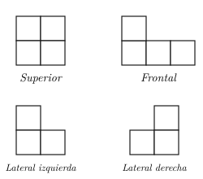
Explicación: Comparando las vistas superior, frontal, lateral izquierda y lateral derecha con cada uno de los cuatro sólidos, sólo el sólido de la opción D coincide con todas.
¿Qué figura continúa en la siguiente imagen?
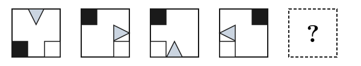
Explicación: El triángulo gris rota $90°$ en sentido contrario a las manecillas del reloj en cada paso (TD → RR → BU → LL), por lo que el siguiente vuelve a TD (centrado arriba, vértice apuntando hacia abajo). Los cuadrados también continúan su patrón: en la siguiente figura el negro va a TR y el blanco a TL. Sólo la opción A cumple ambas condiciones.
Observa las $2$ secuencias que se muestran en la imagen.
Con base en ella, el valor de $x + y$, es:
A) $31$
B) $24$
C) $18$
D) $12$
Explicación: Triángulos: el número superior es el producto de los dos inferiores: $7\times 2 = 14$, $8\times 5 = 40$, $4\times x = 36 \Rightarrow x=9$. Círculos: el número superior es el producto de los otros tres: $3\times 3\times 2 = 18 \neq 12$… revisando, el patrón da $y = 9$. Por tanto $x + y = 9 + 9 = 18$.
¿Qué número completa la secuencia?
A) $6$
B) $3$
C) $-3$
D) $-5$
Explicación: Cada bloque sigue el patrón: número inicial $+\,\text{algo} = \text{siguiente}$. Aplicando la misma operación al tercer bloque: $-3 + ? = 0$ y $0 + ? = 4$… resolviendo da $? = -5$.
¿Cuál de las siguientes figuras continúa la secuencia?
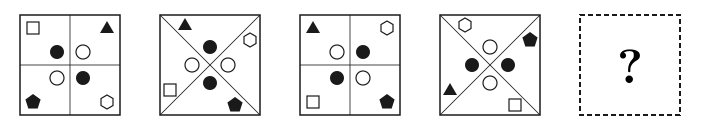
Explicación: La secuencia alterna entre cuadros con grilla + y cuadros con grilla X, y cada figura se mueve manteniendo el patrón de figuras llenas y vacías. La opción C es la única que respeta tanto el tipo de grilla (+ que continúa después de la X) como las posiciones y rellenos correctos de cada símbolo.
¿Cuántos cuadrados se pueden formar con la siguiente imagen?
A) $24$
B) $20$
C) $16$
D) $14$
Explicación: En una rejilla $4\times 4$: cuadrados alineados $3^2 + 2^2 + 1^2 = 9+4+1 = 14$. Cuadrados inclinados (diagonales): $4 + 1 + 1 = 6$. Total $14 + 6 = 20$.
Observa el siguiente cubo. Al desdoblarse, ¿qué figura se obtiene?
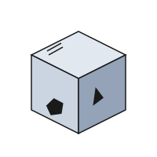
Explicación: Al desplegar las caras del cubo conservando las posiciones relativas del pentágono y el triángulo, sólo la opción C corresponde al desarrollo plano correcto.
Ciencias I (Biología) (12 preguntas)
¿A la capacidad que tienen los seres vivos para aumentar de tamaño y volumen, se le llama?
A) Metabolismo
B) Adaptación
C) Crecimiento
D) Irritabilidad
Explicación: El crecimiento es el aumento de tamaño y volumen de los seres vivos por incremento del número o tamaño de sus células.
¿Cuál es el mecanismo por el cual los organismos incorporan el $O_2$ al ambiente?
A) La nutrición
B) La fotosíntesis
C) La respiración
D) La reproducción
Explicación: La respiración es el proceso por el cual los organismos intercambian gases con el ambiente, tomando $O_2$ y liberando $CO_2$.
🆕 Organelo de forma alargada, constituido por una doble membrana, que interviene en la síntesis de energía:
A) Lisosomas
B) Aparato de Golgi
C) Ribosoma
D) Mitocondria
Explicación: La mitocondria tiene una forma alargada y una doble membrana (externa lisa e interna plegada en crestas). En ella se realiza la respiración celular, proceso que produce ATP (la principal molécula de energía de la célula). Los lisosomas hacen digestión, el aparato de Golgi modifica y empaqueta proteínas, y los ribosomas sintetizan proteínas.
Alimentos como tubérculos, hojas verdes y cítricos aportan a nuestra dieta principalmente…
A) sales y minerales
B) proteínas y grasas
C) vitaminas y sales
D) carbohidratos y vitaminas
Explicación: Las hojas verdes y cítricos son fuente importante de vitaminas (A, C, K) y minerales/sales como hierro, calcio y potasio.
Elige las acciones que se pueden llevar a cabo para conservar los ecosistemas en el territorio mexicano.
1. Suspender el "hoy no circula".
2. Promover el desarrollo sustentable.
3. Evitar el consumo de combustibles fósiles.
4. Impulsar la formación de rellenos sanitarios.
5. Realizar campañas educativas para el reciclaje de basura.
A) $1, 3, 5$
B) $1, 2, 3$
C) $2, 3, 5$
D) $2, 4, 5$
Explicación: Suspender el "hoy no circula" e impulsar rellenos sanitarios no conservan los ecosistemas. Las opciones que sí lo hacen son: promover el desarrollo sustentable, evitar combustibles fósiles y reciclar.
Al término de una meiosis se logran __________, a diferencia de una mitosis donde se obtienen __________.
A) dos células - dos células
B) dos células - cuatro células
C) cuatro células - dos células
D) cuatro células - cuatro células
Explicación: La meiosis produce $4$ células haploides (gametos); la mitosis produce $2$ células diploides idénticas.
Estructura celular que forma a los ribosomas.
A) Aparato de Golgi
B) Centriolo
C) Mitocondria
D) Nucléolo
Explicación: El nucléolo, dentro del núcleo celular, es la estructura encargada de la formación de los ribosomas, ensamblando ARN ribosomal y proteínas.
¿Cuál de los siguientes métodos anticonceptivos inhibe la salida del óvulo del ovario?
A) Parche transdérmico
B) Salpingoclasia
C) Diafragma
D) Coito interrumpido
Explicación: El parche transdérmico libera hormonas que inhiben la ovulación (la salida del óvulo del ovario). La salpingoclasia obstruye las trompas, el diafragma actúa como barrera y el coito interrumpido no afecta la ovulación.
🆕 En los ecosistemas terrestres, la ganadería intensiva y no controlada puede provocar:
A) Selección natural de pastos
B) Selección natural de árboles
C) Pérdida de la diversidad
D) Enriquecimiento del suelo por abono natural
Explicación: La ganadería intensiva sin control compacta el suelo, agota el agua, sobrepastorea la vegetación nativa y elimina hábitats, lo que reduce el número y la variedad de especies vegetales y animales del ecosistema (pérdida de biodiversidad). El abono natural (D) sí enriquece el suelo, pero sólo cuando la ganadería es controlada; el escenario descrito por la pregunta produce el efecto contrario.
🆕 Es el surgimiento evolutivo de una nueva especie:
A) Desadaptación
B) Teoría sintética
C) Especiación
D) Adaptación
Explicación: La especiación es el proceso evolutivo por el cual a partir de una especie ancestral aparecen una o más especies nuevas. Suele ocurrir cuando una población queda aislada (geográfica o reproductivamente) y acumula cambios genéticos hasta que ya no puede reproducirse con la población original. La adaptación es un proceso más amplio (cambios para sobrevivir) y la teoría sintética es el marco teórico moderno de la evolución, no un evento puntual.
A la constitución genética total que presenta un ser vivo se le llama:
A) fenotipo
B) cromosoma
C) gen
D) genotipo
Explicación: El genotipo es el conjunto total de genes de un organismo. El fenotipo es la expresión observable de ese genotipo.
🆕 El proceso fotosintético que realizan los organismos es importante para los seres vivos porque produce moléculas para la vida como:
A) Glucosa y bióxido de carbono
B) Oxígeno y bióxido de carbono
C) Glucosa y oxígeno
D) Agua y bióxido de carbono
Explicación: La ecuación general de la fotosíntesis es $6CO_2 + 6H_2O \xrightarrow{\text{luz}} C_6H_{12}O_6 + 6O_2$. Los productos son glucosa (alimento para la planta y, por la cadena alimenticia, para los demás seres vivos) y oxígeno (que utilizan los organismos para respirar). El $CO_2$ y el $H_2O$ son los reactivos, no los productos.
Formación cívica y ética (12 preguntas)
🆕 La sanción respectiva a la norma moral del individuo proviene de:
A) el gobierno
B) la sociedad moralista
C) Dios
D) la persona misma
Explicación: Las normas morales son las que cada persona reconoce internamente como guía de su conducta; por eso la sanción (el sentimiento de culpa o de paz interior) proviene de la persona misma, no de una autoridad externa. El gobierno y los tribunales aplican normas jurídicas; la sociedad aplica normas sociales/convencionales; Dios sería la fuente de normas religiosas.
🆕 Los artículos $6°$ y $7°$ constitucionales defienden los derechos de prensa, pero su límite de información es el respeto a:
A) los gastos de un diputado corrupto
B) la mala forma de actuar del presidente
C) la información de malos manejos religiosos
D) la vida privada de personas
Explicación: Los artículos $6°$ y $7°$ de la Constitución protegen la libertad de expresión y de prensa, pero establecen que su límite es el respeto a la vida privada, la moral y los derechos de terceros. La denuncia de corrupción de funcionarios públicos no se considera un límite, sino parte del ejercicio legítimo de la libertad de prensa.
¿Cuáles de las siguientes situaciones implican mayor riesgo para adquirir SIDA?
1. Tener relaciones sexuales sin protección con parejas ocasionales.
2. Recibir una transfusión sanguínea durante una intervención quirúrgica.
3. Inyectarse o tatuarse con una aguja que ha sido utilizada por una o varias personas desconocidas.
4. Saludar de beso en la mejilla y estrechar la mano de una persona portadora del virus.
A) I y II
B) I y III
C) II y IV
D) III y IV
Explicación: Las relaciones sin protección y compartir agujas son las principales vías de transmisión. Las transfusiones hospitalarias son seguras y el contacto casual (beso en mejilla, dar la mano) no transmite el VIH.
En una sociedad que se rige bajo un tipo de gobierno democrático, ¿quién o quiénes deben gobernar?
A) La mayoría de la población
B) El jefe del Ejecutivo y la milicia
C) Un Estado económicamente más poderoso
D) Los grupos minoritarios
Explicación: En una democracia, la mayoría de la población gobierna a través de sus representantes electos, respetando los derechos de las minorías.
🆕 El abuso sexual a una persona debe ser denunciado ante el:
A) Juez de paz
B) Presidente Municipal
C) Agente del Ministerio Público
D) Tribunal Colegiado
Explicación: El Agente del Ministerio Público es la autoridad encargada de recibir denuncias de delitos como el abuso sexual e iniciar la investigación correspondiente. Los jueces de paz y tribunales colegiados intervienen en etapas posteriores del proceso (juicio); el presidente municipal no tiene atribuciones penales.
¿Cuál de los siguientes es una norma convencional?
A) Asistir a una escuela donde se imparta educación de calidad
B) Recibir un salario justo
C) El pago de impuestos
D) Ceder el asiento a un anciano en el transporte público
Explicación: Las normas convencionales son acuerdos sociales no obligatorios por ley (etiqueta, cortesía). Las opciones A, B y C corresponden a normas jurídicas o derechos.
🆕 En una discusión entre dos personas que no llegan a un acuerdo, éstas toman la decisión de llamar a una tercera persona para ayudarles a comprender sus posturas, identificar el problema y encontrar soluciones. A esta tercera persona se le llama:
A) árbitro
B) negociador
C) mediador
D) juez
Explicación: El mediador es un tercero imparcial que facilita la comunicación entre las partes en conflicto y las ayuda a encontrar acuerdos por sí mismas, sin imponer una decisión. El árbitro y el juez sí imponen una decisión (laudo o sentencia). El negociador representa a una de las partes, no a las dos.
🆕 Un ciudadano mexicano tiene derecho a votar cuando:
A) Es mayor de 18 años y cuenta con credencial de elector vigente
B) Es mayor de 18 años pero está cumpliendo una sentencia penal
C) Tiene 17 años pero ya cuenta con credencial de elector
D) Es mayor de 18 años pero su credencial de elector está vencida
Explicación: Para votar en México se requiere cumplir tres condiciones simultáneas: (1) ser ciudadano mexicano mayor de 18 años (art. $34°$ constitucional), (2) contar con credencial de elector vigente y (3) estar en pleno ejercicio de los derechos políticos (art. $35°$). El derecho al voto se suspende durante un proceso penal grave o el cumplimiento de una sentencia (art. $38°$), por lo que B es incorrecta. C falla por la edad y D por una credencial caduca.
🆕 En un país democrático, ¿quiénes dan el puesto a sus gobernantes?
A) las mayorías
B) el clero
C) las minorías
D) los partidos políticos
Explicación: La democracia se basa en el principio de mayoría: los gobernantes son elegidos por el voto de la mayoría de los ciudadanos. Los partidos políticos postulan candidatos, pero quienes finalmente los eligen son las mayorías mediante elecciones libres. El clero y las minorías no tienen el poder de elegir gobernantes en un sistema democrático.
🆕 Es uno de los tres poderes de la Unión, encargado de elaborar y aprobar las leyes en México:
A) Ejecutivo — Presidente de la República
B) Judicial — Suprema Corte de Justicia de la Nación
C) Legislativo — Cámara de Diputados y Senadores
D) Gobernadores de los estados
Explicación: El Poder Legislativo en México está integrado por la Cámara de Diputados y el Senado de la República (Congreso de la Unión), y su función principal es elaborar, discutir y aprobar las leyes. El Ejecutivo las promulga y ejecuta; el Judicial las interpreta y aplica en casos concretos; los gobernadores encabezan el Ejecutivo de cada estado, no el federal.
Es la facultad de externar nuestras ideas de forma oral o escrita, y que sólo tiene como límite el respeto a los derechos de los demás.
A) Libertad ilimitada
B) Libertad de expresión
C) Libertad de culto
D) Obligación recíproca
Explicación: La libertad de expresión es el derecho a manifestar opiniones e ideas (oral o escrito) limitado únicamente por el respeto a los derechos de terceros.
🆕 Juan robó a un compañero de clase un reloj de pulso. Por esta acción fue expulsado de la escuela. Juan fue tratado con:
A) Prudencia
B) Tolerancia
C) Justicia
D) Solidaridad
Explicación: La justicia consiste en dar a cada quien lo que le corresponde y aplicar una consecuencia proporcional a la acción cometida. Al expulsar a Juan, la escuela le aplica una sanción justa por haber violado las reglas. La prudencia es actuar con cuidado; la tolerancia es respetar lo diferente; la solidaridad es ayudar al otro.
Español (12 preguntas)
Mariana está realizando un proyecto de investigación sobre mitos y leyendas de la ciudad de México, para ello consultó un libro que su abuelita le prestó, ha guardado el nombre del autor del texto que ha consultado, la editorial, la fecha, el número de edición, el título y el lugar. ¿Qué tipo de ficha puede elaborar con estos datos?
A) Ficha de síntesis
B) Ficha de resumen
C) Ficha bibliográfica
D) Ficha hemerográfica
Explicación: La ficha bibliográfica registra los datos de identificación de un libro: autor, título, editorial, fecha, edición y lugar de publicación.
Estrés
Omar Torreblanca
Es el año 1520 en la antigua Tenochtitlán, españoles y mexicas libran una dura batalla que está siendo ganada contundentemente por estos últimos. En la retirada de las tropas españolas sucede un hecho sorprendente: cuenta la leyenda que ante el implacable acoso de los mexicas, el capitán Pedro de Alvarado realizó un salto prodigioso sobre un puente para salvar su vida. El cronista Bernal Díaz del Castillo —quien admite no haber presenciado la acción, pues en esos momentos "ningún soldado se paraba a verlo [a Alvarado] si saltaba poco o mucho, porque harto teníamos que salvar nuestras vidas porque estábamos en gran peligro de muerte, según la multitud de mexicanos que sobre nosotros cargaban"— refiere que la huida fue a través de calzadas y puentes "llenos de guerreros" y que fue en uno de esos puentes donde Alvarado, usando su lanza como apoyo (como un saltador con garrocha, diríamos ahora) realizó el famoso salto. Los testigos del acto no daban crédito a lo que veían, pues parecía tratarse de una acción sobrehumana. Tan singular fue este acontecimiento que desde aquella época ese lugar comenzó a ser llamado el Salto de Alvarado, y aún en nuestros días conocemos ese punto de la ciudad de México como el Puente de Alvarado.
Tomado de: www.comoves.unam.mx/numeros/articulo/26/el-estres
¿Qué función de la lengua predomina en el texto?
A) Poética
B) Apelativa
C) Referencial
D) Metalingüística
Explicación: La función referencial transmite información objetiva. El texto narra hechos históricos sin opinión personal ni intención persuasiva.
¿Qué recursos para obtener la información en el siguiente texto se han usado?
"Amo el canto del cenzontle pájaro de 400 voces, amo el color del jade, y el enervante perfume de las flores, pero amo más a mi hermano, el hombre". Netzahualcóyotl, es decir, El poeta ama el canto de las aves, el color del jade y el perfume de las flores, pero tiene más amor por la humanidad.
A) Síntesis y resumen
B) Paráfrasis y resumen
C) Cita textual y síntesis
D) Cita textual y paráfrasis
Explicación: La primera parte (entre comillas) es una cita textual. La segunda parte expresa la misma idea con palabras distintas: una paráfrasis.
🆕 Identifica el enunciado con el uso correcto de la coma:
A) Las nubes, que viajan por el cielo, forman figuras.
B) Las nubes que viajan, por el cielo forman figuras.
C) Las nubes que viajan por el cielo, forman figuras.
D) Las nubes que viajan por el cielo forman figuras.
Explicación: La oración "que viajan por el cielo" es una subordinada adjetiva explicativa (aporta información adicional sobre todas las nubes, no las distingue de otras). Las explicativas se escriben entre comas: una al inicio y otra al final, como pausa que enmarca el inciso. Las opciones B, C y D colocan la coma en sitios donde se interrumpe la oración sin razón gramatical; D parece una pausa subjetiva pero rompe la unidad sujeto–verbo. E (sin comas) cambia el significado a una especificativa (sólo las nubes que viajan por el cielo, no otras).
AL DÍA SIGUIENTE, CUANDO ME BAJABA DE LA DILIGENCIA en Cañada, se acercó un hombre a decirme:
— ¿Usted es don Matías Chandón? Soy el cochero de los señores Aquino y estoy aquí para ponerme a sus órdenes y llevarlo a la casa de La Loma.
Me llevó cuesta arriba, entre dos hileras de casas de ricos, hasta llegar a la última, que era la más elegante. Un mozo abrió la verja, el coche entró en un patio y se detuvo ante una escalera de piedra por la que iban bajando un hombre, una mujer y un perrito.
Confieso que me deslumbraron. Diego era alto y delgado, llevaba una gorguera blanquísima y un traje perfectamente cortado. Hasta mucho tiempo después comprendí que a su rostro, de buenas facciones, le faltaba vida. Carmelita estaba sonrosada, tenía la boca carnosa, su mirada refulgía, el pelo era como azabache, iba vestida de azul. —Don Matías —dijo el corregidor—, sea usted bienvenido a Cañada.
Mientras yo les daba la mano, el perrito, furioso, mordió mi bota sin que nadie lo regañara.
A Carmelita le interesaba mi viaje:
— ¿Le llovió en el camino? ¿Hubo lodazal en la cuesta del Tecolote o polvareda? ¿Se rompió el muelle de la diligencia como a veces sucede? ¡Ha de estar agotado!
Mientras yo trataba de explicarle que no estaba cansado, ella se volvió a su marido.
Jorge Ibargüengoitia
El fragmento es una parte de la novela Los pasos de López, por su forma es una narración. Esto lo sabemos porque:
A) habla de hechos del siglo XIX
B) el asunto que trata es histórico
C) hace referencia a las obras de Moliere
D) cuenta una historia y utiliza tiempos verbales en pasado
Explicación: Una narración cuenta una historia en secuencia y, en este caso, el narrador relata en pasado ("me bajaba", "se acercó", "llevó", "deslumbraron").
🆕 Su estructura es la de un texto argumentativo. Su contenido nos remite a la postura, valoración e interpretación del analista. Aparece en determinadas secciones de periódicos o revistas.
A) Nota informativa
B) Artículo de opinión
C) Entrevista
D) Reseña
Explicación: El artículo de opinión es un texto argumentativo en el que un columnista o especialista expone su postura, valoración o interpretación sobre un tema de actualidad; busca convencer al lector. Aparece en secciones específicas de periódicos y revistas ("Opinión", "Editorial"). La nota informativa expone hechos sin opinar; la entrevista reproduce un diálogo con preguntas y respuestas; la reseña describe y valora una obra (libro, película), pero su estructura no es estrictamente argumentativa.
¿Cuál de las siguientes oraciones utiliza nexo condicional?
A) Las visitas se fueron, porque el mayordomo se emborrachó.
B) Si no llegas temprano, ya no te dejarán entrar.
C) Cuando terminó todo, los nuevos actores se encargaron de limpiar el teatro.
D) El gorrión escapó de su jaula pero regresó al verse desprotegido.
Explicación: El nexo "si" introduce una condición; las demás opciones usan nexos causales ("porque"), temporales ("cuando") o adversativos ("pero").
Signo de puntuación que sirve para interrumpir una frase que no se considera necesario escribir completa:
A) punto y coma
B) puntos suspensivos
C) dos puntos
D) punto
Explicación: Los puntos suspensivos (…) indican una interrupción o un enunciado incompleto que el lector puede inferir.
Lee las siguientes oraciones:
1. Leo mientras escucho música instrumental.
2. Yo sí estudié, mientras que tú reprobaste todo.
3. Se suicidó, debido a que nadie pudo salir temprano del trabajo.
4. Molió las nueces al mismo tiempo que yo lavaba el vaso.
5. Primero fue a comprar las cosas; más tarde, a hablar por teléfono.
6. Después de la película, fuimos a cenar.
Selecciona la opción que contenga ejemplos de sucesión y simultaneidad respectivamente:
A) $1, 5 / 2, 3$
B) $5, 6 / 1, 4$
C) $1, 4 / 2, 3$
D) $3, 1 / 2, 6$
Explicación: Sucesión (acciones consecutivas): $5$ ("primero…más tarde") y $6$ ("después de"). Simultaneidad (acciones a la vez): $1$ ("mientras") y $4$ ("al mismo tiempo que").
Ordena los párrafos en una secuencia temporal
1. Ahora, cuando recuerdo aquellos años en el colegio no pienso más que en
2. revivirlos en mis sueños y en mi imaginación.
3. Finalmente, los recuerdos son lo que nos alegra en la soledad, da sentido a nuestra vida y lo único que nos llevamos a la tumba.
4. Además de la diversión y el cariño de mis compañeros y maestros, aquellos años de estudio sembraron en mí conocimientos valiosos. "Lo que bien se aprende nunca se olvida".
5. Antes, cuando estaba dejando de ser niño para convertirme en joven, disfrutaba mucho ir a la escuela porque mis compañeros y maestros hacían de mi día una aventura sin fin.
A) $4, 2, 1, 3$
B) $1, 3, 4, 2$
C) $3, 1, 2, 4$
D) $4, 3, 1, 2$
Explicación: Considerando que los párrafos $1$ y $2$ forman una unidad ("…no pienso más que en revivirlos…"), la secuencia temporal coherente que aparece en las opciones es: pasado escolar ($4$), recuerdos al despertar ($2$), retomado como ahora pienso ($1$) y conclusión ($3$).
Lee el siguiente texto:
El angosto pasillo se iluminó momentáneamente con la luz de un automóvil que pasó lentamente junto al edificio. Los libros prohibidos estaban bien resguardados en la espaciosa habitación del fondo. Nadie podía llegar a ellos sin recorrer todo el pasillo. De pronto, la puerta que resguarda los libros se abrió sola y dejó ver un pequeño libro corriendo para cambiar de estante.
¿Cómo se clasifican las palabras en negritas?
A) Sustantivos
B) Adverbios
C) Artículos definidos
D) Adjetivos
Explicación: Las palabras angosto, prohibidos, espaciosa y opaca describen cualidades de los sustantivos a los que acompañan; son adjetivos calificativos.
El siguiente párrafo está incompleto. Selecciona el inciso, cuyos adverbios completen coherentemente los espacios en blanco:
__________ la granja es __________ como la ves. Daba crías de animales sanos y todos vivíamos felices. __________, vinieron las lluvias, y arruinaron todo el trabajo. __________ Maximino llame al veterinario y los animales se recuperen, ya verás como vuelven a darnos comida y trabajo igual que antes. __________ es según el Señor quiera.
A) Tampoco - así - Luego - Cuando - Todo
B) También - casi - Antes - Cuando - Nada
C) Tampoco - mucho - Luego - Como - Hoy
D) También - casi - Como - Luego - Todo
Explicación: Los adverbios que mantienen la coherencia temporal y modal del texto son: "Tampoco… así… Luego… Cuando… Todo".
Ciencias II (Física) (12 preguntas)
En la siguiente tabla se muestra la distancia en línea recta recorrida por una motocicleta con respecto al tiempo.
| Tiempo (s) | $2$ | $t_3$ | $6$ | $8$ | $12$ |
|---|
| Distancia (m) | $15$ | $22.5$ | $45$ | $60$ | $d_5$ |
De acuerdo con la tabla, ¿en qué tiempo recorre el cuerpo una distancia de $22.5\,\text{m}$ y qué distancia recorre en un tiempo de $12$ segundos?
A) $2\,\text{s}$ y $120\,\text{m}$
B) $3\,\text{s}$ y $90\,\text{m}$
C) $4\,\text{s}$ y $80\,\text{m}$
D) $5\,\text{s}$ y $70\,\text{m}$
Explicación: Velocidad constante: $v = 15/2 = 7.5\,\text{m/s}$. Para $22.5\,\text{m}$: $t = 22.5/7.5 = 3\,\text{s}$. Para $12\,\text{s}$: $d = 7.5 \times 12 = 90\,\text{m}$.
Un esquiador se desplaza sobre una rampa con movimiento rectilíneo uniforme y recorre una distancia de $0.3$ kilómetros en $5$ minutos. ¿Cuál es la velocidad de la persona?
A) $0.06\,\dfrac{\text{m}}{\text{s}}$
B) $1\,\dfrac{\text{m}}{\text{s}}$
C) $6\,\dfrac{\text{m}}{\text{s}}$
D) $60\,\dfrac{\text{m}}{\text{s}}$
Explicación: $0.3\,\text{km}=300\,\text{m}$ y $5\,\text{min}=300\,\text{s}$. Así, $v=300/300=1\,\text{m/s}$.
El enunciado, todo cuerpo tiende a permanecer en reposo o movimiento mientras no exista una fuerza externa que lo modifique, corresponde a:
A) La primera ley de Newton
B) La segunda ley de Newton
C) La tercera ley de Newton
D) Ley de la gravitación universal
Explicación: La primera ley de Newton (ley de la inercia) establece que un cuerpo mantiene su estado de reposo o movimiento rectilíneo uniforme a menos que una fuerza externa actúe sobre él.
Sobre una caja actúan dos fuerzas, como lo ilustra la figura. ¿Cuál es la fuerza resultante sobre el cuerpo?
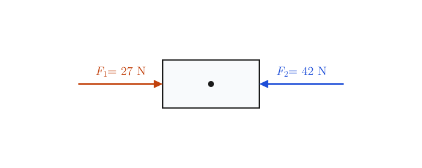
A) $15\,\text{N}$ a la derecha
B) $69\,\text{N}$ a la derecha
C) $15\,\text{N}$ a la izquierda
D) $69\,\text{N}$ a la izquierda
Explicación: $F_1=27\,\text{N}$ apunta a la derecha y $F_2=42\,\text{N}$ apunta a la izquierda; al ser opuestas se restan: $|F_2-F_1|=42-27=15\,\text{N}$. Como $F_2$ es mayor, el sentido de la resultante es hacia la izquierda.
Lee con atención e identifica la opción correcta, el concepto de presión hidrostática afirma que la presión en el fondo de un contenedor lleno de agua:
A) depende del material con que está hecho el contenedor
B) depende de la cantidad de fluido en el recipiente
C) depende de la altura de la columna de agua
D) depende de la forma del contenedor
Explicación: $P = \rho g h$. La presión hidrostática depende sólo de la densidad, la gravedad y la altura de la columna de fluido, no de la forma o material del contenedor.
Relaciona la partícula subatómica con el signo de la carga eléctrica que cada una de ellas posee:
| Partícula | Signo de la partícula |
|---|
| 1. Protón | A. Neutro - cero |
| 2. Electrón | B. Positivo |
| 3. Neutrón | C. Negativo |
A) $1\text{A}, 2\text{B}, 3\text{C}$
B) $1\text{B}, 2\text{C}, 3\text{A}$
C) $1\text{B}, 2\text{A}, 2\text{C}$
D) $1\text{C}, 2\text{B}, 3\text{A}$
Explicación: El protón tiene carga positiva ($1$B), el electrón tiene carga negativa ($2$C) y el neutrón es neutro ($3$A).
Observa la siguiente figura.
Identifica el signo del cambio de velocidad (aceleración) con la letra asignada en la gráfica.
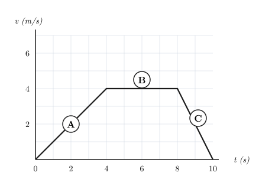
A) $A$ - negativo, $B$ - cero, $C$ - positivo
B) $A$ - positivo, $B$ - cero, $C$ - negativo
C) $A$ - cero, $B$ - negativo, $C$ - positivo
D) $A$ - positivo, $B$ - negativo, $C$ - cero
Explicación: La aceleración es la pendiente de la gráfica $v$-$t$. En $A$ la velocidad sube (aceleración positiva), en $B$ es constante (aceleración cero) y en $C$ baja (aceleración negativa).
Las ondas __________ son aquellas que no necesitan ningún medio elástico para propagarse y son empleadas comúnmente en la comunicación humana haciendo uso de las distintas bandas del espectro electromagnético.
A) mecánicas
B) transversales
C) longitudinales
D) electromagnéticas
Explicación: Las ondas electromagnéticas (radio, microondas, luz, etc.) no requieren un medio material para propagarse; viajan a través del vacío. Por eso son las empleadas en telecomunicaciones.
Por instrucciones de su profesor de Ciencias un adolescente introduce un globo inflado con aire a una cubeta que contiene agua caliente, al transcurrir un tiempo el globo se revienta, debido a que en el interior del globo se:
A) comprime debido a una diferencia de presión y temperatura entre el aire y el agua
B) comprime debido a un aumento en la temperatura y disminución de la presión dentro del globo
C) expande dado que aumenta la presión y la temperatura del aire contenido dentro del globo
D) expande dado que la densidad del aire dentro del globo disminuye considerablemente
Explicación: Por la ley de los gases ideales, al aumentar la temperatura del aire dentro del globo, también aumenta la presión y el volumen. La expansión hace que el globo se reviente.
Observa la siguiente ilustración.
La figura ejemplifica el principio de:
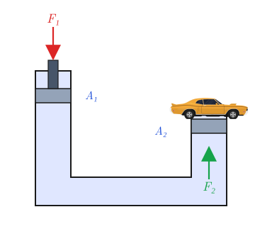
A) Pascal
B) Torricelli
C) Bernoulli
D) Arquímedes
Explicación: La prensa hidráulica ejemplifica el principio de Pascal: la presión aplicada a un fluido confinado se transmite con la misma intensidad en todas direcciones.
¿Cuál de los siguientes materiales, debido a la distribución de electrones en sus átomos, es un buen conductor de electricidad?
A) Papel
B) Vidrio
C) Plástico
D) Metal
Explicación: Los metales tienen electrones de valencia libres ("mar de electrones") que se desplazan fácilmente, por lo que son excelentes conductores.
Isaac Newton demostró que la luz blanca está compuesta por diversos colores al hacer incidir un haz de luz blanca a través de un prisma de vidrio; el científico inglés observó que la luz que salía se descomponía en los colores rojo, naranja, amarillo, verde, azul, violeta y __________.
A) magenta
B) blanco
C) negro
D) añil
Explicación: El espectro visible de la luz blanca al pasar por un prisma contiene siete colores principales: rojo, naranja, amarillo, verde, azul, añil y violeta.
Geografía (12 preguntas)
🆕 El Sistema de Posicionamiento Global (GPS) permite principalmente:
A) Estimar la densidad de población de un país
B) Identificar el tipo de suelo y vegetación de una zona
C) Anticipar terremotos y erupciones volcánicas
D) Determinar la ubicación exacta de un punto en la superficie terrestre
Explicación: El GPS usa una red de satélites que envían señales a un receptor para calcular su latitud, longitud y altitud, es decir, la ubicación exacta de un punto en la superficie terrestre. Las otras opciones describen tareas que requieren censos, estudios de suelos o redes sísmicas, no GPS.
🆕 El movimiento de rotación de la Tierra tiene como consecuencia principal:
A) La sucesión de las estaciones del año
B) La sucesión del día y la noche
C) La existencia de las distintas zonas climáticas
D) La duración de un año en 365 días
Explicación: La rotación es el giro de la Tierra sobre su propio eje cada 24 horas, lo que produce la sucesión del día y la noche. Las estaciones y la duración del año son consecuencia del movimiento de traslación; las zonas climáticas dependen de la latitud y la inclinación del eje.
🆕 México es un país con alta actividad sísmica porque se encuentra en:
A) El interior de una placa tectónica antigua y estable
B) Una zona donde convergen varias placas tectónicas
C) Una región volcánica que dejó de estar activa hace siglos
D) El borde de una placa que se desplaza muy lentamente
Explicación: El territorio mexicano se localiza sobre el límite de varias placas tectónicas (Norteamericana, del Pacífico, de Cocos, de Rivera y del Caribe). La fricción y subducción entre ellas produce sismos frecuentes, especialmente en la costa del Pacífico.
🆕 Partiendo de la evaporación, ordena las fases del ciclo hidrológico.
1. Precipitación
2. Escurrimiento
3. Condensación
4. Filtración
A) $2, 3, 4, 1$
B) $2, 4, 1, 3$
C) $3, 1, 2, 4$
D) $3, 4, 1, 2$
Explicación: El ciclo hidrológico, partiendo de la evaporación del agua de mares y ríos, sigue este orden: (3) condensación del vapor en las nubes → (1) precipitación (lluvia, nieve o granizo) → (2) escurrimiento del agua por la superficie hacia ríos y mares → (4) filtración o infiltración del agua hacia los mantos freáticos. El proceso se reinicia con una nueva evaporación.
🆕 Cuatro Ciénegas y el Cañón del Sumidero son dos áreas naturales y turísticas protegidas ubicadas en los estados de:
A) Chihuahua y Oaxaca
B) Coahuila y Chiapas
C) Sonora y Michoacán
D) Baja California y Tabasco
Explicación: El Área de Protección de Flora y Fauna Cuatro Ciénegas se ubica en el estado de Coahuila (desierto de Chihuahua). El Parque Nacional Cañón del Sumidero se encuentra en Chiapas, atravesado por el río Grijalva.
🆕 Representación de la Tierra que cuenta con escala, tipo de proyección y simbología:
A) Plano
B) Mapa
C) Globo terráqueo
D) Fotografía aérea
Explicación: El mapa es la representación plana, reducida y simbólica de la superficie terrestre; siempre lleva escala, proyección y simbología. El plano representa áreas pequeñas (un edificio, una colonia) sin proyección; el globo terráqueo no usa proyección plana; la fotografía aérea es una imagen, no una representación cartográfica.
🆕 La siguiente tabla muestra la población total de México (en millones) de 1895 a 2005:
| Año | 1895 | 1910 | 1930 | 1950 | 1970 | 1990 | 2005 |
|---|
| Millones | $12.6$ | $15.1$ | $16.6$ | $25.8$ | $48.9$ | $81.6$ | $103.1$ |
A partir de la información, el incremento de la población en México de $1910$ a $1970$ fue de ________ millones y de $1970$ a $2005$ fue de ________ millones.
A) $64$ — $152$
B) $33.8$ — $54.2$
C) $88$ — $54.2$
D) $152$ — $64$
Explicación: Incremento $1910$ a $1970$: $48.9 - 15.1 = 33.8$ millones. Incremento $1970$ a $2005$: $103.1 - 48.9 = 54.2$ millones. La población creció más rápidamente en la segunda mitad del siglo XX.
🆕 Estados que tienen una gran importancia en la cría de ganado bovino:
A) Chiapas, Oaxaca y Quintana Roo
B) Colima, Sonora y Guerrero
C) Jalisco, Puebla y Tamaulipas
D) Sonora, Chihuahua y Veracruz
Explicación: Los principales estados productores de ganado bovino en México son Veracruz, Jalisco, Chihuahua, Sonora y Chiapas. Estos estados cuentan con grandes extensiones de pastizales y un clima favorable para la cría de bovinos para carne y leche. Chiapas, Oaxaca y Quintana Roo (A) son más selváticos; Colima y Guerrero (B) tienen ganadería pero no a gran escala; Jalisco sí es ganadero pero Puebla y Tamaulipas no destacan tanto.
🆕 La Llanura Costera del Golfo de México es importante económicamente por la explotación de:
A) Yacimientos de plata, oro y cobre
B) Petróleo y gas natural
C) Recursos forestales de pino y encino
D) Generación de energía hidroeléctrica a gran escala
Explicación: La Llanura Costera del Golfo concentra los principales yacimientos de petróleo y gas natural de México (Campeche, Tabasco, Veracruz, Tamaulipas), incluida la Sonda de Campeche. La minería de metales se da en zonas del norte y centro; las hidroeléctricas grandes están sobre ríos como el Grijalva o el Balsas.
🆕 La preservación de los arrecifes de coral favorece el equilibrio del clima planetario porque:
A) controlan la densidad del agua oceánica
B) reducen los residuos sólidos del mar y de los ríos
C) mantienen controlado el crecimiento del plancton
D) contribuyen en la disminución de dióxido de carbono
Explicación: Los arrecifes de coral, junto con las algas que viven en simbiosis con ellos, fijan grandes cantidades de dióxido de carbono ($CO_2$) del agua y la atmósfera, lo que ayuda a regular el efecto invernadero y a mantener el equilibrio climático global.
🆕 La Unión Europea se distingue de otros bloques económicos porque sus miembros:
A) Comparten un mismo idioma oficial en todos los países
B) Han alcanzado un alto grado de integración con moneda y políticas comunes
C) Mantienen aranceles elevados al comercio entre ellos
D) Limitan los acuerdos exclusivamente al sector agrícola
Explicación: La Unión Europea es el bloque más integrado del mundo: además del libre comercio, comparte una moneda común (el euro, en la mayoría de sus miembros), políticas monetarias, libre circulación de personas y bienes, y un parlamento supranacional. Otros bloques (T-MEC, Mercosur, APEC) tienen un grado de integración mucho menor.
🆕 México ocupa el primer lugar mundial en la producción de:
A) oro
B) petróleo
C) plata
D) cobre
Explicación: México es el primer productor mundial de plata desde hace varias décadas, con cerca de la cuarta parte de la producción global. Los principales estados productores son Zacatecas, Chihuahua, Durango y Sonora. México no ocupa el primer lugar en oro (China lidera), petróleo (Estados Unidos, Arabia Saudita y Rusia) ni cobre (Chile).
Historia Universal y de México (12 preguntas)
Identifica algunos preceptos liberales relacionados con la Declaración Universal de los Derechos del Hombre y del Ciudadano en el contexto de la Revolución Francesa de 1789.
1. Los derechos estamentales y los fueros para la aristocracia y el clero.
2. La democracia ateniense en la Duma zarista.
3. La libertad, la propiedad y la felicidad de cada individuo, en cuanto derechos humanos.
4. El derecho de huelga para emancipar a la clase proletaria o asalariada.
5. El derecho divino de los reyes y la concentración de los poderes en la Corona.
6. La vida como un derecho natural y como un derecho civil.
7. La soberanía popular para la elección de las autoridades.
A) $1, 3$ y $6$
B) $2, 4$ y $5$
C) $3, 6$ y $7$
D) $4, 5$ y $6$
Explicación: La Declaración de 1789 promueve libertad/propiedad ($3$), la vida como derecho natural ($6$) y la soberanía popular ($7$). Las opciones $1, 5$ son del Antiguo Régimen; $2, 4$ corresponden a otros contextos.
¿Cuáles, entre los siguientes factores, dieron origen a la Revolución Francesa de 1789?
1. Los descubrimientos geográficos de los siglos XV y XVI.
2. La invención de la imprenta y de la máquina de vapor.
3. El poder absoluto y despótico concentrado en la Corona.
4. La división social francesa con base en privilegios estamentales.
5. Los lujos exagerados de la corte versallesca.
6. El cobro oneroso de impuestos al Tercer Estado o vulgo.
7. Las demandas laborales impulsadas por el movimiento ludista.
A) $1, 3, 4$ y $7$
B) $2, 3, 4$ y $5$
C) $3, 4, 5$ y $6$
D) $3, 4, 5$ y $7$
Explicación: Los factores que originaron la Revolución Francesa son: (3) el poder absolutista de Luis XVI, (4) la rígida división estamental con privilegios para la nobleza y el clero, (5) el derroche de la corte de Versalles y (6) el cobro abusivo de impuestos al Tercer Estado. Los descubrimientos geográficos, la imprenta y el movimiento ludista corresponden a otros contextos históricos.
🆕 Un hecho que NO es propio de la Revolución Rusa es:
A) La Revolución Rusa se originó en $1917$
B) Las ideas de Carlos Marx y Federico Engels influyeron en la Revolución Rusa
C) El Zar era la máxima autoridad en Rusia
D) Lenin estableció el capitalismo en Rusia
Explicación: La Revolución Rusa de 1917 estuvo inspirada en las ideas socialistas de Marx y Engels, derrocó al Zar Nicolás II y llevó al poder a los bolcheviques bajo Lenin. Sin embargo, Lenin NO estableció el capitalismo, sino un régimen socialista/comunista que se opuso al capitalismo. Por eso esta afirmación es la incorrecta.
¿Cuáles de las siguientes referencias corresponden al Tratado de Versalles de 1919?
1. Se firmó y fue impuesto por países que ganaron la Primera Guerra Mundial.
2. Corresponde a la Independencia de las Trece Colonias.
3. Sirvió como base para la adopción de un régimen socialista en Rusia.
4. Fue establecido por Rusia y Alemania para negociar la paz entre ambos.
5. Se exigió que Alemania devolviese a Francia las provincias de Alsacia y Lorena.
6. También se decretó el desarme de Alemania.
7. Además, sirvió para erradicar el Nazismo en Alemania.
A) $1, 5$ y $6$
B) $2, 4$ y $7$
C) $3, 5$ y $7$
D) $4, 5$ y $6$
Explicación: El Tratado de Versalles fue impuesto por los aliados ganadores ($1$), restituyó Alsacia-Lorena a Francia ($5$) y obligó al desarme alemán ($6$). El nazismo aún no existía en 1919.
Ordena cronológicamente los siguientes sucesos de la Primera y Segunda guerras mundiales.
1. Asesinato del archiduque Francisco Fernando en Sarajevo, Bosnia.
2. Hundimiento del Lusitania, envío del Telegrama Zimmermann e intervención de Estados Unidos para apoyar al bando de los Aliados.
3. Formación de bloques militares: Triple Alianza y Triple Entente.
4. Ataque nipón a la flota norteamericana en Pearl Harbor en el Pacífico.
5. Invasión alemana a Polonia e inicio de la Segunda Guerra Mundial.
6. Firma del Tratado de Versalles y transformación del mapa geopolítico europeo.
A) $3, 1, 2, 6, 5$ y $4$
B) $1, 3, 5, 6, 4$ y $2$
C) $2, 1, 6, 5, 4$ y $3$
D) $4, 5, 6, 2, 3$ y $1$
Explicación: Cronología: (3) formación de Triple Alianza/Entente (antes de 1914) → (1) asesinato de Francisco Fernando (1914) → (2) Lusitania, Telegrama Zimmermann y entrada de EE.UU. (1915-1917) → (6) Tratado de Versalles (1919) → (5) invasión a Polonia (1939) → (4) Pearl Harbor (1941).
🆕 Algunos puntos importantes de la Revolución Industrial fueron:
1. Las máquinas sustituyen la fuerza humana.
2. Existían clases como el proletariado y la burguesía.
3. Se originó la acumulación de capital.
4. Se toma la Bastilla.
5. La derrota de Napoleón en Waterloo.
6. La Convención Nacional comprobó que Luis XVI apoya a Austria contra Francia y lo condena a ser guillotinado.
A) $1, 5, 6$
B) $2, 3, 4$
C) $1, 2, 3$
D) $1, 2, 6$
Explicación: La Revolución Industrial (siglo XVIII–XIX, Inglaterra) se caracterizó por: (1) la sustitución de la fuerza humana por máquinas (telar mecánico, máquina de vapor de Watt), (2) el surgimiento de las clases burguesía industrial y proletariado, y (3) la acumulación de capital por parte de los industriales. Los puntos 4, 5 y 6 corresponden a la Revolución Francesa y a las Guerras Napoleónicas, no a la Revolución Industrial.
Identifica dos factores que favorecieron el fortalecimiento del Imperio español a raíz del descubrimiento de tierras en el Nuevo Mundo:
A) La alianza entre los españoles y el reino indígena tlaxcalteca, así como la Encomienda
B) La influencia de la Ilustración, así como las nuevas rutas marítimas en el Océano Atlántico
C) La colonización española en América, así como la Contrarreforma religiosa del siglo XVI
D) El mestizaje en la sociedad de castas, así como las Reformas Borbónicas del siglo XVIII
Explicación: La alianza con los tlaxcaltecas permitió la caída de Tenochtitlán; la Encomienda dio a los colonos derechos sobre el trabajo indígena, ambos factores fortalecieron al Imperio.
Completa el espacio en blanco.
Según las disposiciones establecidas por el monarca español Carlos III en 1767, __________ dieron origen a un mayor cobro de impuestos al comercio y a los bienes inmuebles del clero, así como al fomento de la minería y al establecimiento de doce intendencias en la Nueva España.
A) la Encomienda y la esclavitud
B) la expulsión de los jesuitas y la Inquisición
C) la Constitución de Cádiz y el sistema de raya
D) las Reformas Borbónicas
Explicación: Las Reformas Borbónicas, impulsadas por Carlos III en la segunda mitad del siglo XVIII, modernizaron la administración colonial: aumentaron impuestos al comercio y al clero, fomentaron la minería y reorganizaron el virreinato con el sistema de intendencias (1786).
🆕 Ordena cronológicamente los acontecimientos relacionados con la Independencia de México:
1. Consumación de la Independencia.
2. Se toman las ideas de la Ilustración como ejemplo para nuestra independencia.
3. Se reconoce como primer presidente de México a Guadalupe Victoria.
4. Grito de Dolores.
A) $4, 2, 3, 1$
B) $2, 4, 3, 1$
C) $2, 1, 3, 4$
D) $2, 4, 1, 3$
Explicación: El orden correcto es: (2) las ideas de la Ilustración (siglo XVIII) inspiran a los criollos, (4) Grito de Dolores dado por Miguel Hidalgo el $16$ de septiembre de $1810$, (1) Consumación de la Independencia con la entrada del Ejército Trigarante a la Ciudad de México el $27$ de septiembre de $1821$, y (3) Guadalupe Victoria es electo primer presidente de México en $1824$.
🆕 La Revolución Mexicana inicia el:
A) $16$ de septiembre de $1810$
B) $28$ de noviembre de $1911$
C) $20$ de noviembre de $1910$
D) $5$ de febrero de $1917$
Explicación: La Revolución Mexicana inicia el $20$ de noviembre de $1910$, fecha en la que Francisco I. Madero, mediante el Plan de San Luis, llamó al pueblo a levantarse en armas contra el régimen porfirista. El $16$ de septiembre de $1810$ corresponde al Grito de Dolores (inicio de la Independencia, no de la Revolución); el $5$ de febrero de $1917$ es la promulgación de la Constitución, no el inicio del movimiento armado.
¿Cuál de las siguientes referencias es un dato incorrecto?
A) José María Velasco fue un pintor paisajista, autor de obras como El Popocatépetl y El Ferrocarril
B) Cruce de Caminos es el nombre de un mural con temática social y científica plasmada por Diego Rivera en el Palacio de Bellas Artes
C) David Alfaro Siqueiros fue el muralista que recreó las estrofas del Himno Nacional en los muros de la Escuela Nacional Preparatoria
D) Entre los artistas mexicanos, exponente de la novela de la Revolución, destaca Mariano Azuela, autor de Los de Abajo
Explicación: Las estrofas del Himno Nacional en los muros de la Escuela Nacional Preparatoria fueron pintadas por Fernando Leal y otros muralistas, no por Siqueiros.
Fue uno de los presidentes tecnócratas, mismo que estableció la política conocida como la renovación moral. Durante su sexenio, la ciudad de México fue sacudida por los sismos de 1985. Con dicho mandatario se inició la apertura comercial y un proceso de reconversión industrial:
A) Luis Donaldo Colosio
B) Miguel de la Madrid Hurtado
C) Vicente Fox Quesada
D) Carlos Salinas de Gortari
Explicación: Miguel de la Madrid Hurtado (1982-1988) impulsó la "renovación moral", gobernó durante los sismos de 1985 e inició la apertura comercial (ingreso al GATT en 1986).
Matemáticas (12 preguntas)
La superficie total de la tierra es aproximadamente $510\,072\,000\,\text{km}^2$. ¿Cuál es su equivalencia en $\text{cm}^2$?
A) $5.10072\times 10^{19}\,\text{cm}^2$
B) $5.10072\times 10^{18}\,\text{cm}^2$
C) $5.10072\times 10^{17}\,\text{cm}^2$
D) $5.10072\times 10^{20}\,\text{cm}^2$
Explicación: $510\,072\,000\,\text{km}^2 = 5.10072\times 10^{8}\,\text{km}^2$. Como $1\,\text{km}^2 = 10^{10}\,\text{cm}^2$, entonces $5.10072\times 10^{8} \times 10^{10} = 5.10072\times 10^{18}\,\text{cm}^2$.
La velocidad de la luz es aproximadamente de $3\times 10^{8}$ metros por segundo, la distancia que recorre en un segundo se denomina segundo - luz, ¿cuál es esta distancia en kilómetros?
A) $3\times 10^{5}\,\text{km}$
B) $3.4\times 10^{6}\,\text{km}$
C) $2.8\times 10^{6}\,\text{km}$
D) $3\times 10^{8}\,\text{km}$
Explicación: $3\times 10^{8}\,\text{m} = 3\times 10^{8}/10^{3}\,\text{km} = 3\times 10^{5}\,\text{km}$.
Observa la siguiente figura, de acuerdo con los datos, ¿cuál es la expresión que representa el área sombreada?
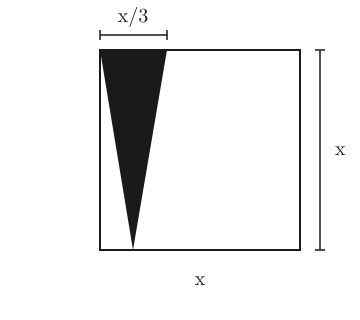
A) $A = \dfrac{x^2}{3}$
B) $A = \dfrac{x^3}{4}$
C) $A = \dfrac{3x^3}{4}$
D) $A = \dfrac{x^2}{6}$
Explicación: El triángulo tiene base $x/3$ y altura $x$. Área = $\dfrac{1}{2} \cdot \dfrac{x}{3} \cdot x = \dfrac{x^2}{6}$.
La familia Martínez tiene un terreno, como el que se muestra en la figura.
Con base en él, determina la expresión algebraica que corresponde al área total del terreno.
A) $x^2 + 14x + 14$
B) $x^2 + 28x + 196$
C) $x^2 - 18x + 28$
D) $x^2 - 196$
Explicación: El terreno tiene lados $(x+14)$ por $(x+14)$. Área $= (x+14)^2 = x^2 + 28x + 196$.
Guadalupe tiene $44$ años y su hija Jacqueline tiene $6$ años, ¿qué expresión ayuda a determinar cuántos años han de transcurrir para que la edad de Guadalupe, sea el triple de la edad de su hija?
A) $44 + x = 3x + 6$
B) $44 + x = 3(6 + x)$
C) $44 + 3x = 3(6) + x$
D) $44 + 6 = 3x$
Explicación: Dentro de $x$ años, Guadalupe tendrá $44+x$ años y Jacqueline $6+x$ años. Para que la madre sea el triple: $44+x = 3(6+x)$.
Un barco navega con una trayectoria de $x - 2y = 10$; otro navega con una trayectoria $x + y = 1$, ¿en qué punto del plano se encontrarán los $2$ barcos?
A) $P(4, 3)$
B) $P(-4, -3)$
C) $P(-4, 3)$
D) $P(4, -3)$
Explicación: Restando: $(x-2y)-(x+y) = 10-1 \Rightarrow -3y = 9 \Rightarrow y = -3$. Sustituyendo en $x+y=1$: $x = 1-(-3) = 4$. Por tanto $P(4,-3)$.
Allan asegura que la edad de su abuelita Lucía es de $78$ años y que la siguiente ecuación le permite obtener su edad $x^2 + 3x - 10 = 78$. Si "$x$" representa la edad de Allan, ¿cuántos años tiene Allan?
A) $13$ años
B) $11$ años
C) $8$ años
D) $5$ años
Explicación: $x^2+3x-10=78 \Rightarrow x^2+3x-88=0$. Factorizando: $(x-8)(x+11)=0$. La solución positiva es $x=8$.
Un profesor de educación física, investigó en un libro de Matemáticas que para determinar el largo y el ancho de una cancha de fútbol, debe resolver la siguiente ecuación:
$x^2 - 87x + 1820 = 0$
Elige la opción que le ayude al profesor a obtener las dimensiones correctas de la cancha de fútbol.
A) $(x-52)(x-35)=0$, Largo $= 52\,\text{m}$, ancho $= 35\,\text{m}$
B) $(x-91)(x+20)=0$, Largo $= 91\,\text{m}$, ancho $= 20\,\text{m}$
C) $(x-45)(x-42)=0$, Largo $= 45\,\text{m}$, ancho $= 42\,\text{m}$
D) $(x+54)(x+30)=0$, Largo $= 54\,\text{m}$, ancho $= 30\,\text{m}$
Explicación: Buscamos dos números que sumen $87$ y multipliquen $1820$: $52$ y $35$ (porque $52+35=87$ y $52\cdot 35=1820$). Por tanto $(x-52)(x-35)=0$.
¿Cuál es el área del triángulo en la siguiente imagen, si el radio de las circunferencias es de $10\,\text{cm}$? (Considere $\sqrt{3}=1.7320$)
A) $180.4\,\text{cm}^2$
B) $178.5\,\text{cm}^2$
C) $173.2\,\text{cm}^2$
D) $167.1\,\text{cm}^2$
Explicación: Los lados del triángulo equilátero unen los centros de las tres circunferencias tangentes: $L = 2r = 20\,\text{cm}$. Área $= \dfrac{\sqrt{3}}{4}L^2 = \dfrac{1.7320}{4}(400) = 173.2\,\text{cm}^2$.
La siguiente gráfica muestra las fases del $CO_2$ (bióxido de carbono).
Con base en ella, contesta lo siguiente: si el $CO_2$ estuviera sometido a una presión de $60$ atm (atmósferas) y a una temperatura de $-57°\text{C}$, en qué fase se encontraría.
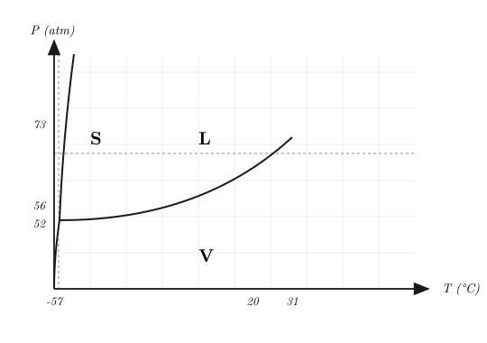
A) gaseoso
B) sólido
C) en las 3 fases
D) líquido
Explicación: El punto triple del $CO_2$ está cerca de $-56.6°\text{C}$ y $5.2$ atm. A $60$ atm y $-57°\text{C}$, la temperatura es ligeramente menor a la del punto triple y la presión es muy alta: el $CO_2$ se encuentra en estado sólido.
En la siguiente imagen se muestra que el triángulo $ABC$ es semejante al triángulo $AQR$.
Con base en los datos que se indican, ¿cuál es la longitud del lado $AR$?
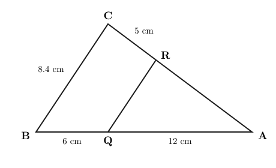
A) $10.0\,\text{cm}$
B) $12.3\,\text{cm}$
C) $15.0\,\text{cm}$
D) $18.4\,\text{cm}$
Explicación: Por semejanza: $\dfrac{AB}{AQ} = \dfrac{AC}{AR}$. $AB = 6+12 = 18$, $AQ = 12$, $AC = AR + 5$. Entonces $\dfrac{18}{12} = \dfrac{AR+5}{AR} \Rightarrow 1.5\,AR = AR+5 \Rightarrow AR = 10\,\text{cm}$.
Olivia tiene una recaudería y a ella le gustan las Matemáticas. Para conocer qué verdura se vende más, realiza la siguiente gráfica de frecuencias que muestra la cantidad de kilos vendidos en una semana.
| Verdura | zanahoria | calabaza | jitomate | papa | chiles |
|---|
| kilogramos | $45$ | $30$ | $80$ | $55$ | $60$ |
Con base en la tabla, indica ¿qué gráfica de barras la representa?
Explicación: La gráfica correcta debe mostrar las alturas en el orden: zanahoria $45$, calabaza $30$, jitomate $80$, papa $55$, chiles $60$. Sólo la opción A respeta esos valores.
Ciencias III (Química) (12 preguntas)
El siguiente esquema muestra la escala de pH y el valor de éste de algunos productos comunes.
De acuerdo con el esquema, es correcto afirmar que al adicionar jugo de limón a una solución de leche de magnesia:
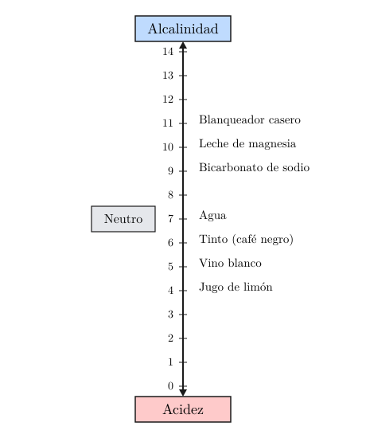
A) aumentan la alcalinidad y el pH de la solución
B) aumentan la acidez y el pH de la solución
C) disminuyen la alcalinidad y el pH de la solución
D) disminuyen la acidez y el pH de la solución
Explicación: La leche de magnesia es alcalina (pH$\approx 10.5$); al añadir jugo de limón (ácido, pH$\approx 2$) se neutraliza la base: el pH baja y la alcalinidad disminuye.
Esmeralda preparó galletas Neiman-Marcus con $2$ tazas de mantequilla, $4$ tazas de harina, $2$ cucharadas de soda, $2$ tazas de azúcar, $5$ tazas de avena licuada, $24$ onzas de chispas de chocolate, $2$ tazas de azúcar moscabada, $1$ cucharada de sal, $1$ barra rallada de chocolate Hershey de $8$ onzas, $4$ huevos, $2$ cucharadas de polvo de hornear, $2$ cucharadas de vainilla, $3$ tazas de nueces trituradas. Al medir su masa observó que todo lo anterior media $2\,800\,\text{g}$, después de cocinar todo obtuvo $112$ galletas de $25\,\text{g}$ cada una, obteniendo la misma masa. La ley que cumple en este proceso es la de…
A) Boyle
B) Avogadro
C) las proporciones múltiples
D) la conservación de la materia
Explicación: Como la masa total antes ($2\,800\,\text{g}$) es igual a la masa total después ($112 \times 25 = 2\,800\,\text{g}$), se cumple la Ley de la Conservación de la Materia (Lavoisier).
Cuando combinamos una sustancia como el calcio con el flúor para formar el fluoruro de calcio que contienen las pastas dentales y que ayuda al fortalecimiento de los dientes, se está formando…
A) un elemento
B) un compuesto
C) una mezcla homogénea
D) una mezcla heterogénea
Explicación: Al unirse químicamente dos elementos (calcio + flúor) en proporción fija ($CaF_2$) se forma un compuesto, no una mezcla.
🆕 El cambio de estado de sólido a gas sin pasar por el estado líquido se denomina:
A) Evaporación
B) Fusión
C) Sublimación
D) Condensación
Explicación: La sublimación es el paso directo de sólido a gas sin pasar por el estado líquido (ejemplos: hielo seco, naftalina, yodo). La evaporación es de líquido a gas, la fusión de sólido a líquido y la condensación de gas a líquido.
Carlos y Diana echaron agua en un recipiente y la calentaron. Después de un tiempo, observaron la formación de burbujas y el desprendimiento de vapor.
Con base en lo observado, ellos afirmaron lo siguiente:
1. El agua alcanzó la temperatura de ebullición.
2. El agua hirvió porque el recipiente era pequeño.
3. El agua libera gases que forman las burbujas.
4. El agua tiene burbujas porque puede tener jabón.
Las causas por las cuales el agua hierve y se forman burbujas, están en las afirmaciones:
A) $1$ y $3$
B) $1$ y $4$
C) $1, 2$ y $3$
D) $2, 3$ y $4$
Explicación: El agua hierve al alcanzar su temperatura de ebullición ($1$) y las burbujas son vapor de agua (gas) que escapa del líquido ($3$). Las opciones $2$ y $4$ son incorrectas.
Se realiza un cambio químico relacionado con la vida cotidiana durante…
A) los procesos siderúrgicos en donde se tratan minerales de hierro para obtener diferentes tipos de éste o de sus aleaciones
B) la corrosión de un metal que tiene lugar debido, en alguna medida, a la temperatura, la salinidad del medio, la humedad y las propiedades de los materiales en cuestión
C) el calentamiento del agua en los boilers o calentadores de depósito, de paso y/o solares de los hogares
D) el movimiento del viento que puede alcanzar velocidades de $62\,\text{km/h}$ en las depresiones tropicales; de $63$ a $117\,\text{km/h}$ en las tormentas tropicales; y, más de $118\,\text{km/h}$, en los huracanes
Explicación: La corrosión es una reacción química (oxidación del metal) que cambia la composición. Las otras opciones son procesos físicos: siderurgia (transformación con calor), calentamiento de agua y movimiento del viento.
Cuando Juan pasa por una zona donde el aire contiene gases tóxicos, usa una máscara de gas que los filtra.
A partir de lo anterior, se puede afirmar que el aire contaminado es una…
A) sustancia, porque su aspecto es uniforme aunque presente impurezas
B) sustancia, porque no es posible separar físicamente sus componentes
C) mezcla, porque es posible separar físicamente sus componentes por filtración
D) mezcla, porque sólo es posible eliminar sus componentes por métodos químicos
Explicación: Si una máscara puede filtrar los componentes tóxicos, entonces el aire contaminado es una mezcla y sus componentes pueden separarse por métodos físicos (filtración).
En la siguiente Tabla periódica, ¿qué bloques representan la ubicación de los metales alcalinos y los gases nobles respectivamente?
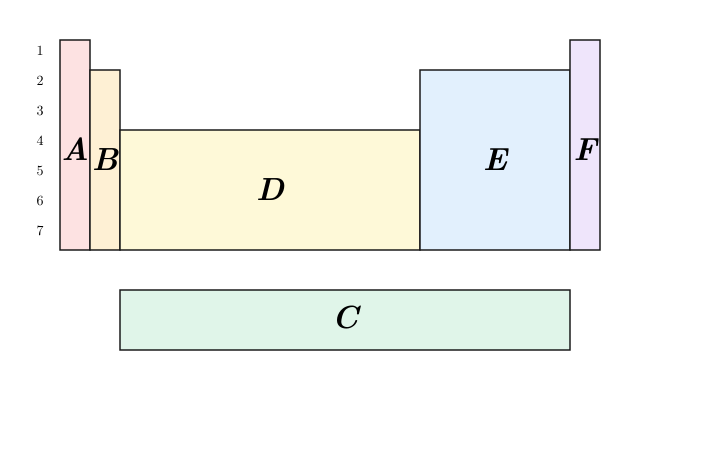
A) A y D
B) A y F
C) B y F
D) C y E
Explicación: Los metales alcalinos están en el grupo 1 (primera columna del bloque s, representado por A), y los gases nobles están en el grupo 18 (última columna del bloque p, representado por F).
Los __________ son las partículas subatómicas responsables de mantener unidos a los átomos de un compuesto, como se presenta en la siguiente estructura de Lewis.
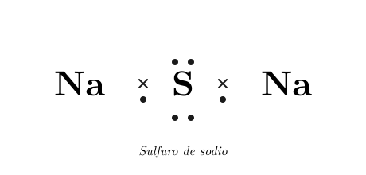
A) electrones de valencia
B) electrones internos
C) neutrones
D) protones
Explicación: Los enlaces químicos se forman por la interacción de los electrones de valencia (los del nivel más externo). En la estructura de Lewis del sulfuro de sodio (Na₂S), los pares de electrones compartidos entre los átomos son electrones de valencia.
El átomo neutro de sodio tiene número atómico de $11$ y un número de masa de $23$, lo anterior indica que posee:
A) $11$ electrones, $11$ protones y $11$ neutrones
B) $11$ electrones, $11$ protones y $12$ neutrones
C) $12$ electrones, $11$ protones y $11$ neutrones
D) $12$ electrones, $12$ protones y $11$ neutrones
Explicación: Número atómico $Z = 11$ → $11$ protones. Átomo neutro → $11$ electrones. Número de masa $A = 23 = p + n$ → neutrones $= 23 - 11 = 12$.
🆕 El compuesto $NaOH$ se clasifica como:
A) Ácido
B) Sal
C) Óxido básico
D) Hidróxido
Explicación: Los hidróxidos están formados por un metal unido al grupo hidroxilo ($\text{OH}^-$). El $NaOH$ (hidróxido de sodio o sosa cáustica) es una base fuerte que en disolución libera iones $OH^-$.
Algunos métodos de separación de mezclas se dibujan a continuación: Evaporación, Filtración, Decantación, Destilación, Tamizado.
Al tamizar una mezcla que contiene agua, azúcar, piedras y aceite, es posible que…
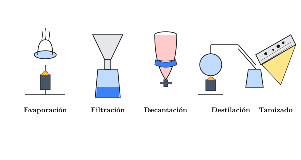
A) el agua y el aceite pasen el tamiz y queden retenidos el azúcar y las piedras
B) pasen por el tamiz el agua, el azúcar y el aceite, y queden retenidas las piedras
C) el agua pase el tamiz y queden retenidos el aceite, el azúcar y las piedras
D) pasen todas las sustancias por el tamiz y no quede retenida ninguna sustancia
Explicación: El tamiz separa por tamaño de partícula. El agua disuelve el azúcar (forma una solución) que pasa junto con el aceite (líquido); sólo las piedras —sólidas y grandes— quedan retenidas.